第 2 章 监督学习#
本章解决：监督学习（supervised learning）怎么落地——先用"买船预测"的例子讲清泛化、过拟合与欠拟合这一全书主线，再把 scikit-learn 里最常用的 8 类模型逐个讲透：kNN、线性模型（OLS/Ridge/Lasso/LogisticRegression/LinearSVC）、朴素贝叶斯、决策树、随机森林、梯度提升、核 SVM、神经网络，最后教你拿到
decision_function和predict_proba两把"不确定度"的尺子。 第 1 章用鸢尾花走通了"训练—评估"流程；本章是它的算法篇展开，也是全书最长的一章，可以当参考手册反复回查。下一章转向无监督学习与预处理。
📓 章代码：nb/ch02.ipynb（分节跟随代码，固定种子实跑输出；旧 API 适配处见代码内“版本适配”注释）
监督学习是最常用也是最成功的机器学习类型之一。每当想要根据给定输入预测某个结果，并且手里还有输入/输出对的示例时，就应该使用监督学习。这些输入/输出对构成训练集，我们用它来构建机器学习模型，目标是对从未见过的新数据做出准确预测。监督学习通常需要人力来构建训练集，但之后原本非常费力甚至无法完成的任务就可以自动完成，通常速度也更快。
2.0 本章导图#
2.1 分类与回归#
监督机器学习问题主要有两种：分类（classification） 与 回归（regression）。
- 分类的目标是预测类别标签（class label），标签来自预定义的可选列表。分类又可分为二分类（binary classification）（在两个类别之间区分）和多分类（multiclass classification）（在两个以上类别之间区分）。二分类可以看作回答一道是/否问题：把电子邮件分为垃圾邮件和非垃圾邮件，要问的就是"这封电子邮件是垃圾邮件吗？"。
- 在二分类问题中，通常将其中一个类别称为正类（positive class），另一个称为反类（negative class）。"正"不代表好的方面或正数，而是代表研究对象——找垃圾邮件时，"正"可能就指垃圾邮件。把哪个类别当"正类"往往是主观判断，与领域有关。
- 回归的目标是预测一个连续值，编程术语叫浮点数，数学术语叫实数。根据教育水平、年龄和居住地预测一个人的年收入，就是回归：预测值是一个金额，可以在给定范围内任意取值。另一个例子是根据上一年的产量、天气和农场员工数预测玉米农场的产量。
区分两者有一个简单方法：问输出是否具有某种连续性。年收入预测里，40 000 美元和 40 001 美元没有实质差别，预测成 39 999 或 40 001 也不必过分在意——有连续性，是回归。而识别网站语言的任务里，网站要么用这种语言要么用那种语言，英语和法语之间不存在"第三种过渡语言"——没有连续性，是分类。
| 分类 | 回归 | |
|---|---|---|
| 输出 | 预定义列表中的类别标签 | 连续数值（浮点数） |
| 例子 | 鸢尾花品种、垃圾邮件识别、网站语言 | 年收入、玉米产量、房价 |
| 特殊术语 | 正类 / 反类（二分类） | 目标值也叫响应（response） |
拓展：同一个模型常常"两栖"
本章你会看到每个算法几乎都有一对类：KNeighborsClassifier / KNeighborsRegressor、LinearRegression / Ridge / Lasso、DecisionTreeClassifier / DecisionTreeRegressor、SVR、MLPClassifier / MLPRegressor……分类与回归的差别主要在"输出头"和损失函数上，底层思路（找邻居、画超平面、切分空间）是共享的。所以学完本章，你就同时掌握了两种任务的基本盘。
2.2 泛化、过拟合与欠拟合#
在监督学习中，我们想在训练数据上构建模型，然后对没见过的新数据（与训练集具有相同的特性）做出准确预测。如果一个模型能够对没见过的数据做出准确预测，我们就说它能够从训练集泛化（generalize） 到测试集。我们想要构建一个泛化精度尽可能高的模型。
如果训练集和测试集足够相似，模型在训练集上预测得准，测试集上预计也准。但如果允许构建非常复杂的模型，训练集精度可以想多高就多高——这就引出一个虚构的例子。
一位新手数据科学家想根据历史记录预测某个顾客是否会买船，目标是向可能购买的人发送促销邮件，而不打扰不感兴趣的顾客。顾客记录如表 2-1：
| 年龄 | 拥有的小汽车数量 | 是否有房子 | 子女数量 | 婚姻状况 | 是否养狗 | 是否买过船 |
|---|---|---|---|---|---|---|
| 66 | 1 | 是 | 2 | 丧偶 | 否 | 是 |
| 52 | 2 | 是 | 3 | 已婚 | 否 | 是 |
| 22 | 0 | 否 | 0 | 已婚 | 是 | 否 |
| 25 | 1 | 否 | 1 | 单身 | 否 | 否 |
| 44 | 0 | 否 | 2 | 离异 | 是 | 否 |
| 39 | 1 | 是 | 2 | 已婚 | 是 | 否 |
| 26 | 1 | 否 | 2 | 单身 | 否 | 否 |
| 40 | 3 | 是 | 1 | 已婚 | 是 | 否 |
| 53 | 2 | 是 | 2 | 离异 | 否 | 是 |
| 64 | 2 | 是 | 3 | 离异 | 否 | 否 |
| 58 | 2 | 是 | 2 | 已婚 | 是 | 是 |
| 33 | 1 | 否 | 1 | 单身 | 否 | 否 |
观察一段时间后，新手数据科学家发现规律："如果顾客年龄大于 45 岁，并且子女少于 3 个或没有离婚，那么他就想要买船。"对表中的 12 行数据，这条规律 100% 正确。我们还可以编出许多条完美解释这个数据集的规律——数据中的年龄都没有重复，所以甚至可以说"66、52、53 和 58 岁的人想买船，其他年龄都不想"。
但我们要的不是对这个数据集做预测（答案早已知道），而是想知道新顾客是否会买船。在训练集上 100% 的精度对此没有帮助。这条规律看起来过于复杂，而且只有很少的数据支持——比如"或没有离婚"这一条只对应一名顾客。直觉上（数学上也可以证明），简单的模型对新数据的泛化能力更好：如果"年龄大于 50 岁的人想要买船"这样一条简单规律也能解释所有顾客的行为，我们会更相信它。因此我们总想找到最简单的模型。
- 构建一个对现有信息量来说过于复杂的模型，就叫过拟合（overfitting）：过分关注训练集的细节，训练集上表现很好，但不能泛化到新数据。
- 模型过于简单（比如"有房子的人都买船"），抓不住数据全部内容和变化，连训练集上都表现很差，就叫欠拟合（underfitting）。
模型越复杂，在训练数据上的预测越好；但过于复杂就会开始过多关注每个单独的数据点，无法很好地泛化。两者之间存在一个最佳位置，可以得到最好的泛化性能：
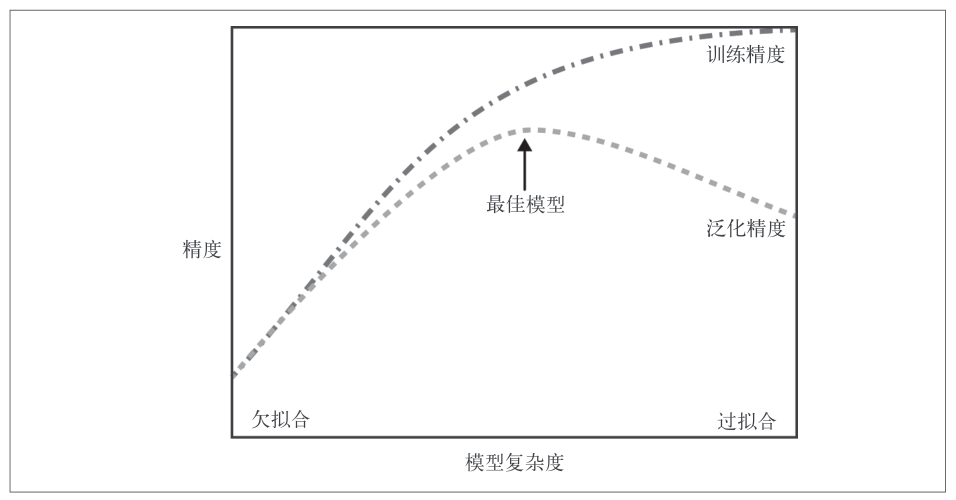
模型复杂度与数据集大小的关系#
模型复杂度与训练数据集中输入的变化密切相关：数据集中数据点的变化范围越大，在不发生过拟合的前提下可以使用的模型就越复杂。通常收集更多数据点可以有更大的变化范围，所以更大的数据集可以用来构建更复杂的模型。但仅复制相同的数据点或收集非常相似的数据是无济于事的。
回到卖船的例子：如果查看了 10 000 多行顾客数据，并且都符合那条复杂规律，我们就更有理由相信它有效——比从 12 行数据得出可信得多。
拓展：别忘了"数据本身就是超参"
原书在这里给了本章最重要的一句话：永远不要低估更多数据的力量！ 收集更多数据、适当构建更复杂的模型，对监督学习任务往往特别有用；在现实世界中，你能决定收集多少数据，这可能比模型调参更有效。这也是为什么本书主要关注固定大小数据集上的方法，但工程上的第一杠杆永远是数据量。机器学习里把这种"模型容量与数据量匹配"的思想总结成偏差—方差（bias–variance）权衡：欠拟合对应高偏差，过拟合对应高方差，更多数据主要压方差。图 2-13 的学习曲线会把这个思想画出来。
2.3 监督学习算法#
本节介绍最常用的机器学习算法：它们如何从数据中学习、如何预测、复杂度如何变化、优缺点是什么、最适用于哪类数据，以及最重要的参数和选项的含义。许多算法都有分类和回归两种形式，两种都会讲到。没有必要通读每个算法的详细描述——本章可以当参考指南，不确定某个算法怎么工作时回来查。
2.3.1 一些样本数据集#
我们用一些数据集来说明不同算法：一部分是小型模拟数据集，用来强调算法的某个特定方面；另一部分是现实世界的大型数据集。
forge 数据集（模拟二分类）。两个特征，26 个数据点：
# ===== 书 2.3.1 节：forge 数据集散点图 =====
# 生成数据集
X, y = mglearn.datasets.make_forge()
# 数据集绘图：以第一个特征为 x 轴、第二个特征为 y 轴，颜色和形状对应类别
mglearn.discrete_scatter(X[:, 0], X[:, 1], y)
plt.legend(["Class 0", "Class 1"], loc=4)
plt.xlabel("First feature")
plt.ylabel("Second feature")
print("X.shape: {}".format(X.shape))
图 2-2 就是这个数据集的散点图（26 个点、2 个特征，两类用不同形状区分）。
wave 数据集（模拟回归）。只有一个输入特征和一个连续的目标变量（响应），40 个样本（图 2-3：x 轴为单一特征，y 轴为回归目标）：
# ===== 书 2.3.1 节：wave 数据集图像 =====
X, y = mglearn.datasets.make_wave(n_samples=40)
plt.plot(X, y, 'o')
plt.ylim(-3, 3)
plt.xlabel("Feature")
plt.ylabel("Target")
用这些低维数据集是因为书页只有两个维度，特征数超过两个就很难展示。但要记住：从低维数据集得出的结论可能并不适用于高维数据集——记住这一点，低维研究依然很有启发。
威斯康星州乳腺癌数据集（cancer，现实世界分类）。记录乳腺癌肿瘤的临床测量数据，每个肿瘤标记为"良性（benign，无害肿瘤）"或"恶性（malignant，癌性肿瘤）"，任务是基于人体组织的测量数据预测肿瘤是否恶性：
# ===== 书 2.3.1 节：乳腺癌数据集 =====
from sklearn.datasets import load_breast_cancer
cancer = load_breast_cancer()
print("cancer.keys(): \n{}".format(cancer.keys()))
print("Shape of cancer data: {}".format(cancer.data.shape))
print("Sample counts per class:\n{}".format(
{n: v for n, v in zip(cancer.target_names, np.bincount(cancer.target))}))
print("Feature names:\n{}".format(cancer.feature_names))
cancer.keys():
dict_keys(['feature_names', 'data', 'DESCR', 'target', 'target_names'])
Shape of cancer data: (569, 30)
Sample counts per class:
{'benign': 357, 'malignant': 212}
Feature names:
['mean radius' 'mean texture' 'mean perimeter' 'mean area' ...]
侧栏：Bunch 对象 scikit-learn 内置数据集通常保存为 Bunch 对象，里面包含真实数据和一些数据集信息。它与字典很相似，额外的好处是可以用点操作符访问值：
bunch.key代替bunch['key']。
波士顿房价数据集（现实世界回归）。利用犯罪率、是否邻近查尔斯河、公路可达性等信息，预测 20 世纪 70 年代波士顿地区房屋价格的中位数。506 个数据点、13 个特征。书中还会把它扩展：不仅用 13 个测量结果，还加入特征之间的乘积（交互项）——这种包含导出特征的方法叫特征工程（feature engineering），第 4 章详述：
# ===== 书 2.3.1 节：波士顿房价与扩展特征 =====
# 原书：from sklearn.datasets import load_boston（sklearn≥1.2 已移除，直接 ImportError）
# 版本适配：mglearn 内置等价加载（boston.data/target 用法不变，本地缓存离线可跑）
from mglearn.datasets import load_boston
boston = load_boston()
print("Data shape: {}".format(boston.data.shape)) # (506, 13)
X, y = mglearn.datasets.load_extended_boston()
print("X.shape: {}".format(X.shape)) # (506, 104)
最初的 13 个特征加上这 13 个特征两两组合（有放回）得到的 91 个特征，一共有 104 个特征（第 1 个特征可与 13 个特征相乘，第 2 个可与 12 个相乘……13+12+…+1=91）。
版本差异：load_boston 已被 scikit-learn 移除（1.2 起）
load_boston 因伦理问题（其中一列特征涉及种族）自 1.0 起弃用、1.2 起彻底移除，如今运行会直接 ImportError。mglearn 的 load_extended_boston() 内部调用的正是它，所以也会连带报错。替代方案：用 fetch_openml(name="boston_house_prices", version=1, as_frame=True) 拿到原始数据后自己构造交互特征，或改用 fetch_california_housing() 学习同样的流程。想跑通书里的代码而不改数据源，也可以把 scikit-learn 降级到 1.1 以下（不推荐）。本笔记以下沿用原书写法展示，报错处按此说明替换。
本章将利用这些数据集解释各算法的性质。下面从上一章见过的 k 近邻开始。
2.3.2 k 近邻#
k-NN 算法可以说是最简单的机器学习算法：构建模型只需要保存训练数据集。想要对新数据点做出预测，算法在训练集中找到最近的数据点——它的"最近邻"。
1. k 近邻分类#
最简单的版本只考虑一个最近邻，预测结果就是这个训练点的已知输出：
# ===== 书 2.3.2 节：单一近邻与 3 近邻的预测演示 =====
mglearn.plots.plot_knn_classification(n_neighbors=1)
mglearn.plots.plot_knn_classification(n_neighbors=3)
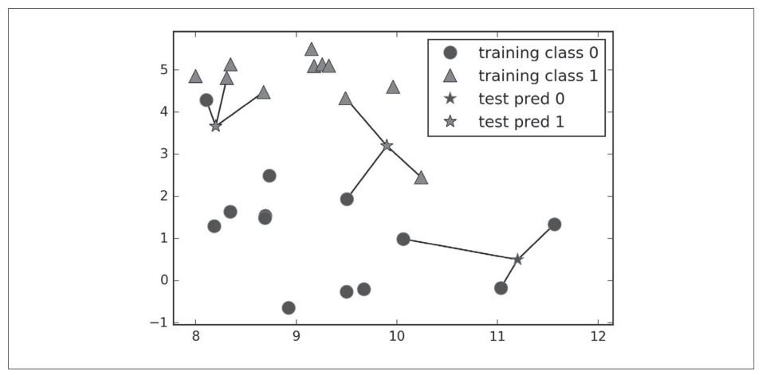
图中添加了 3 个新数据点（五角星）。对每个新点，算法标记训练集中与它最近的点，预测结果由邻居们的多数类别给出。考虑多于一个邻居时用"投票法（voting）"：数一数 k 个邻居里多少个属于类别 0、多少个属于类别 1，占多数的类别就是预测结果。左上角新数据点在 3 近邻下的预测与单一近邻时不同。这张图是二分类，但方法同样适用于多分类：数每个类别各有多少邻居，取最常见者。
用 scikit-learn 应用 k 近邻的标准流程——先划分数据以评估泛化性能，再实例化、拟合、预测、评分：
# ===== 书 2.3.2 节：KNeighborsClassifier 标准流程 =====
from sklearn.model_selection import train_test_split
X, y = mglearn.datasets.make_forge()
X_train, X_test, y_train, y_test = train_test_split(X, y, random_state=0)
from sklearn.neighbors import KNeighborsClassifier
clf = KNeighborsClassifier(n_neighbors=3) # 实例化：可设定参数，如邻居个数
clf.fit(X_train, y_train) # 拟合：对 kNN 来说就是保存数据集，供预测时算距离
print("Test set predictions: {}".format(clf.predict(X_test)))
print("Test set accuracy: {:.2f}".format(clf.score(X_test, y_test)))
模型精度约 86%：测试集中 86% 的样本预测类别正确。
2. 分析 KNeighborsClassifier#
对二维数据集，可以在 xy 平面上画出所有可能测试点的预测结果并按类别着色，从而看到决策边界（decision boundary）——算法对类别 0 和类别 1 的分界线：
# ===== 书 2.3.2 节：不同 n_neighbors 值的决策边界 =====
fig, axes = plt.subplots(1, 3, figsize=(10, 3))
for n_neighbors, ax in zip([1, 3, 9], axes):
# fit 方法返回对象本身，所以可以把实例化和拟合放在一行代码中
clf = KNeighborsClassifier(n_neighbors=n_neighbors).fit(X, y)
mglearn.plots.plot_2d_separator(clf, X, fill=True, eps=0.5, ax=ax, alpha=.4)
mglearn.discrete_scatter(X[:, 0], X[:, 1], y, ax=ax)
ax.set_title("{} neighbor(s)".format(n_neighbors))
ax.set_xlabel("feature 0")
ax.set_ylabel("feature 1")
axes[0].legend(loc=3)
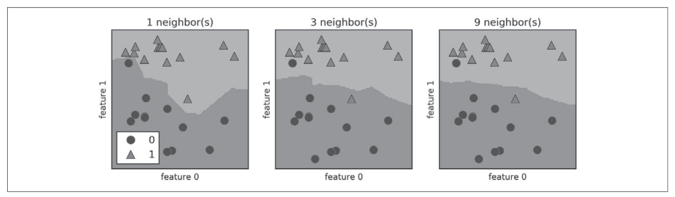
单一邻居的决策边界紧跟着训练数据；邻居个数越多，决策边界越平滑。更平滑的边界对应更简单的模型——使用更少的邻居对应更高的模型复杂度（图 2-1 的右侧），更多的邻居对应更低的复杂度（图 2-1 的左侧）。极端情况：邻居个数等于训练集中所有数据点的个数，那么每个测试点的邻居完全相同（全部训练点），所有预测结果也完全相同（训练集中出现次数最多的类别）。
再到现实世界的乳腺癌数据集上证实"复杂度—泛化"关系：按不同邻居个数分别评估训练集与测试集性能：
# ===== 书 2.3.2 节：乳腺癌数据集上扫描 n_neighbors =====
from sklearn.datasets import load_breast_cancer
cancer = load_breast_cancer()
X_train, X_test, y_train, y_test = train_test_split(
cancer.data, cancer.target, stratify=cancer.target, random_state=66)
training_accuracy = []
test_accuracy = []
# n_neighbors 取值从 1 到 10
neighbors_settings = range(1, 11)
for n_neighbors in neighbors_settings:
# 构建模型
clf = KNeighborsClassifier(n_neighbors=n_neighbors)
clf.fit(X_train, y_train)
# 记录训练集精度
training_accuracy.append(clf.score(X_train, y_train))
# 记录泛化精度
test_accuracy.append(clf.score(X_test, y_test))
plt.plot(neighbors_settings, training_accuracy, label="training accuracy")
plt.plot(neighbors_settings, test_accuracy, label="test accuracy")
plt.ylabel("Accuracy")
plt.xlabel("n_neighbors")
plt.legend()
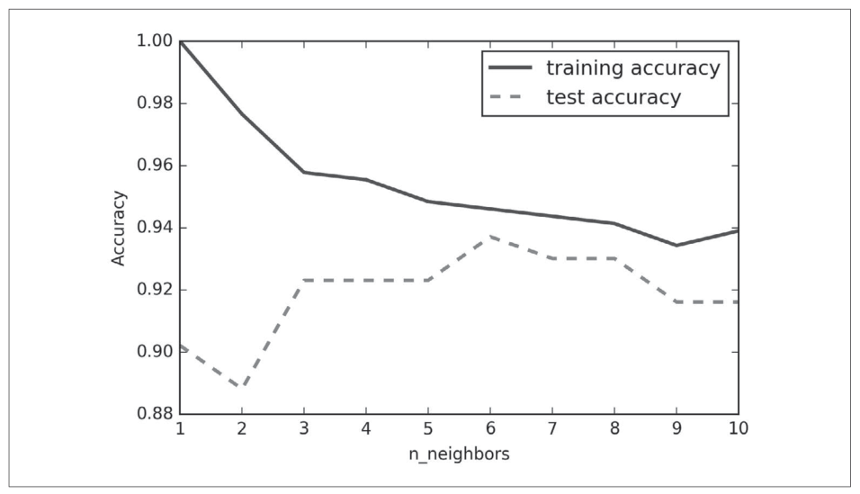
仅考虑单一近邻时训练集预测十分完美；随着邻居增多、模型变简单，训练集精度下降。单一邻居时测试精度反而低于更多邻居的情形——单一近邻的模型过于复杂；10 个邻居时模型又过于简单，性能变得更差。最佳性能在中间，邻居个数大约为 6。不过要记住坐标轴刻度：最差的性能也有约 88% 的精度，仍然可以接受。
3. k 近邻回归#
k 近邻也可用于回归。单一近邻的回归：预测结果就是最近邻的目标值；多个近邻时，预测结果是这些邻居目标值的平均值：
# ===== 书 2.3.2 节：k 近邻回归演示（图 2-8 / 图 2-9） =====
mglearn.plots.plot_knn_regression(n_neighbors=1)
mglearn.plots.plot_knn_regression(n_neighbors=3)
用于回归的 k 近邻在 scikit-learn 的 KNeighborsRegressor 类中实现，用法与分类版类似：
# ===== 书 2.3.2 节：KNeighborsRegressor =====
from sklearn.neighbors import KNeighborsRegressor
X, y = mglearn.datasets.make_wave(n_samples=40)
# 将 wave 数据集分为训练集和测试集
X_train, X_test, y_train, y_test = train_test_split(X, y, random_state=0)
# 模型实例化，并将邻居个数设为 3
reg = KNeighborsRegressor(n_neighbors=3)
# 利用训练数据和训练目标值来拟合模型
reg.fit(X_train, y_train)
print("Test set predictions:\n{}".format(reg.predict(X_test)))
print("Test set R^2: {:.2f}".format(reg.score(X_test, y_test)))
Test set predictions:
[-0.054 0.357 1.137 -1.894 -1.139 -1.631 0.357 0.912 -0.447 -1.139]
Test set R^2: 0.83
回归问题的 score 返回 R² 分数（决定系数，coefficient of determination）——回归模型预测优度的度量。R² 等于 1 对应完美预测，等于 0 对应常数模型（总是预测训练集响应 \(y_{train}\) 的平均值）。这里的 0.83 表示拟合相对较好。
拓展：R² 的严格定义，以及它能小于 0
原书说 R²"位于 0 到 1 之间"，这是简化说法。严格定义为
[ R^2 = 1 - \frac{\sum_i (y_i - \hat{y}_i)^2}{\sum_i (y_i - \bar{y})^2} ]
分母是"什么都不知道、闭眼猜均值"的误差。如果模型比闭眼猜均值还差（分子更大），R² 就会是负数——scikit-learn 的 score 在那种情况下会返回负值，通常意味着模型或数据出了大问题。
4. 分析 KNeighborsRegressor#
对一维数据集，可以查看所有特征取值对应的预测结果：
# ===== 书 2.3.2 节：不同 n_neighbors 的 kNN 回归对比 =====
fig, axes = plt.subplots(1, 3, figsize=(15, 4))
# 创建 1000 个数据点，在 -3 和 3 之间均匀分布
line = np.linspace(-3, 3, 1000).reshape(-1, 1)
for n_neighbors, ax in zip([1, 3, 9], axes):
# 利用 1 个、3 个或 9 个邻居分别进行预测
reg = KNeighborsRegressor(n_neighbors=n_neighbors)
reg.fit(X_train, y_train)
ax.plot(line, reg.predict(line))
ax.plot(X_train, y_train, '^', c=mglearn.cm2(0), markersize=8)
ax.plot(X_test, y_test, 'v', c=mglearn.cm2(1), markersize=8)
ax.set_title(
"{} neighbor(s)\n train score: {:.2f} test score: {:.2f}".format(
n_neighbors, reg.score(X_train, y_train),
reg.score(X_test, y_test)))
ax.set_xlabel("Feature")
ax.set_ylabel("Target")
axes[0].legend(["Model predictions", "Training data/target",
"Test data/target"], loc="best")
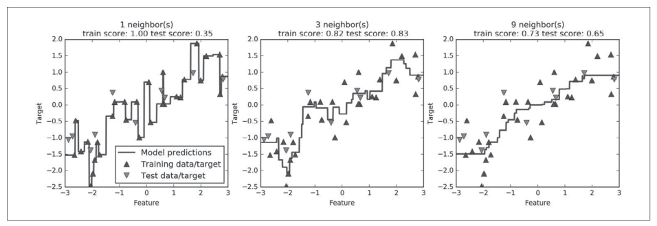
单一邻居时训练集中每个点都对预测结果有显著影响，预测曲线经过所有训练点，结果非常不稳定；考虑更多邻居后预测更平滑，但对训练数据的拟合变差——又是那根复杂度的跷跷板。
5. 优点、缺点和参数#
KNeighborsClassifier 有 2 个重要参数：邻居个数与数据点之间距离的度量方法。实践中使用较小的邻居个数（比如 3 或 5）往往就有不错的结果，但应该调节这个参数；选择合适的距离度量超出了本书范围，默认使用欧氏距离，多数情况下效果很好。
- 优点：模型很容易理解，通常不需要过多调节就能得到不错的性能；是尝试更高级技术之前的很好的基准方法；构建模型通常很快。
- 缺点：训练集很大（特征多或样本多）时预测速度慢；对数据预处理要求高（第 3 章）；对有很多特征（几百或更多）的数据集效果往往不好，对大多数特征取值多为 0 的稀疏数据集效果尤其差。
由于预测慢且不能处理很多特征的数据集，实践中往往不会用到 kNN。下一节的线性模型就没有这两个缺点。
2.3.3 线性模型#
线性模型（linear models）在实践中广泛使用，几十年来被大量研究，可以追溯到一百多年前。线性模型利用输入特征的线性函数（linear function） 进行预测。
1. 用于回归的线性模型#
回归问题线性模型预测的一般公式：
这里 \(x[0]\) 到 \(x[p]\) 表示单个数据点的特征（共 \(p+1\) 个特征），\(w\) 和 \(b\) 是学习到的模型参数，\(\hat{y}\) 是模型的预测结果。单一特征数据集的公式 \(\hat{y} = w[0] \cdot x[0] + b\) 就是高中数学的直线方程：\(w[0]\) 是斜率，\(b\) 是 y 轴偏移。特征更多时，\(w\) 包含沿每个特征坐标轴的斜率。也可以把预测值看作输入特征的加权求和，权重由 \(w\) 的元素给出（可以取负值）。
在 wave 数据集上学习参数 \(w[0]\) 和 \(b\)：
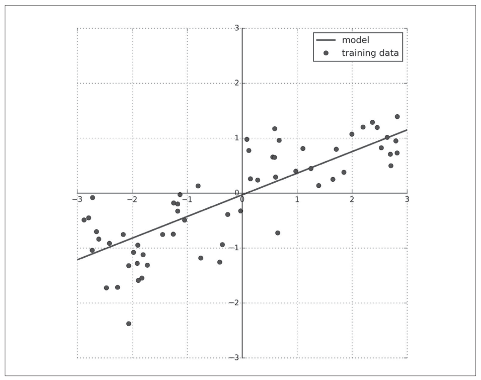
用于回归的线性模型可以概括为：单一特征时预测是一条直线，两个特征时是一个平面，更高维（更多特征）时是一个超平面（hyperplane）。
如果与图 2-10 的 KNeighborsRegressor 预测相比，直线的预测能力看起来非常受限，数据的所有细节似乎都丢失了——目标 \(y\) 是特征的线性组合，这是一个非常强的（也有点不现实的）假设。但一维数据的观点是片面的：特征数量多于训练数据点数量时，任何目标 \(y\) 都可以在训练集上被线性函数完美拟合。不同的线性回归模型的区别在于：如何从训练数据中学习参数 \(w\) 和 \(b\)，以及如何控制模型复杂度。
2. 线性回归（又名普通最小二乘法）#
线性回归，或称普通最小二乘法（ordinary least squares，OLS），是回归问题最简单也最经典的线性方法。它寻找参数 \(w\) 和 \(b\)，使得对训练集的预测值与真实回归目标值 \(y\) 之间的均方误差（mean squared error） 最小——均方误差是预测值与真实值之差的平方和除以样本数。线性回归没有参数，这是优点（不用调），也因此无法控制模型的复杂度：
# ===== 书 2.3.3 节：LinearRegression 在 wave 数据集上 =====
from sklearn.linear_model import LinearRegression
X, y = mglearn.datasets.make_wave(n_samples=60)
X_train, X_test, y_train, y_test = train_test_split(X, y, random_state=42)
lr = LinearRegression().fit(X_train, y_train)
# “斜率”参数 w（权重/系数）保存在 coef_，偏移 b 保存在 intercept_
print("lr.coef_: {}".format(lr.coef_))
print("lr.intercept_: {}".format(lr.intercept_))
print("Training set score: {:.2f}".format(lr.score(X_train, y_train)))
print("Test set score: {:.2f}".format(lr.score(X_test, y_test)))
lr.coef_: [ 0.394]
lr.intercept_: -0.031804343026759746
Training set score: 0.67
Test set score: 0.66
侧栏：scikit-learn 的下划线约定
coef_和intercept_结尾的下划线不是笔误：scikit-learn 总是把从训练数据中得出的值保存在以下划线结尾的属性中，以便与用户设置的参数区分开。intercept_是一个浮点数，coef_是 NumPy 数组，每个元素对应一个输入特征——wave 只有 1 个特征，所以lr.coef_只有一个元素。
R² 约 0.66，不算好，但训练集与测试集分数非常接近——说明可能存在欠拟合而不是过拟合。一维数据集上过拟合风险小，因为模型非常简单。而在高维数据集上线性模型变得更强大，过拟合可能性也随之变大。看扩展的波士顿房价数据集（506 样本、104 个导出特征）上的表现：
# ===== 书 2.3.3 节：LinearRegression 在扩展波士顿房价数据集上 =====
X, y = mglearn.datasets.load_extended_boston()
X_train, X_test, y_train, y_test = train_test_split(X, y, random_state=0)
lr = LinearRegression().fit(X_train, y_train)
print("Training set score: {:.2f}".format(lr.score(X_train, y_train)))
print("Test set score: {:.2f}".format(lr.score(X_test, y_test)))
原书笔误：导出特征个数应为 104，不是 105
原书此处正文写"506 个样本和 105 个导出特征"，后文 lasso 两处也写"105 个特征中的 4 个/33 个"。实际 X.shape 输出是 \((506, 104)\)：13 个原始特征 + 91 个两两组合特征 = 104（13+13×14/2）。正文数字与代码输出自相矛盾，以 104 为准。
训练集与测试集之间 0.95 对 0.61 的差距是过拟合的明显标志，因此要找一个可以控制复杂度的模型。标准线性回归最常用的替代方法之一就是岭回归。
3. 岭回归#
岭回归（ridge regression）也是用于回归的线性模型，预测公式与普通最小二乘法相同。但对系数（\(w\)）的选择不仅要在训练数据上预测得好，还要满足附加约束：系数尽量小——\(w\) 的所有元素都应接近于 0。直观上，这意味着每个特征对输出的影响应尽可能小（斜率很小），同时仍给出很好的预测结果。这种约束是正则化（regularization） 的一个例子：对模型做显式约束以避免过拟合。岭回归用到的是 L2 正则化（数学上，惩罚的是系数向量的 L2 范数，即 \(w\) 的欧氏长度）。
拓展：岭回归的目标函数
"既拟合得好，又要求系数小"写成一行就是
[ \min_{w,\,b} \; \sum_{i=1}^{n} \left( y_i - \hat{y}i \right)^2 + \alpha \sum w_j^2 ]
前一项管"拟合训练数据"，后一项管"系数别太大"，}^{p\(\alpha\) 就是两者之间的拨码。scikit-learn 里 Ridge 求解的就是这个带 L2 惩罚的最小二乘问题。
# ===== 书 2.3.3 节：Ridge 与 alpha 参数 =====
from sklearn.linear_model import Ridge
ridge = Ridge().fit(X_train, y_train) # 默认 alpha=1.0
print("Training set score: {:.2f}".format(ridge.score(X_train, y_train)))
print("Test set score: {:.2f}".format(ridge.score(X_test, y_test)))
ridge10 = Ridge(alpha=10).fit(X_train, y_train)
print("alpha=10: train {:.2f} / test {:.2f}".format(
ridge10.score(X_train, y_train), ridge10.score(X_test, y_test)))
ridge01 = Ridge(alpha=0.1).fit(X_train, y_train)
print("alpha=0.1: train {:.2f} / test {:.2f}".format(
ridge01.score(X_train, y_train), ridge01.score(X_test, y_test)))
Training set score: 0.89
Test set score: 0.75
alpha=10: train 0.79 / test 0.64
alpha=0.1: train 0.93 / test 0.77
Ridge 在训练集上的分数低于 LinearRegression，但测试集分数更高——与预期一致：线性回归过拟合了；Ridge 是约束更强的模型，更不容易过拟合，复杂度更小的模型训练性能差一些但泛化更好。既然只关心泛化性能，就应该选 Ridge。
Ridge 在模型的简单性（系数接近 0）与训练集性能之间权衡，拨码就是 alpha 参数（前面例子用的默认值 alpha=1.0，但没有理由认为它最佳；最佳值取决于具体数据集，第 5 章讲选择方法）。增大 alpha 使系数更加趋向于 0，降低训练集性能但可能提高泛化性能（alpha=10 时测试分数 0.64，这个例子里反而变差）；减小 alpha 让系数受到的限制更小，非常小的 alpha 下系数几乎没有约束，得到与 LinearRegression 类似的模型（alpha=0.1 时 0.93/0.77，这个例子里效果不错）。
把不同 alpha 的 coef_ 画出来，可以更直观地看 alpha 如何改变模型：
# ===== 书 2.3.3 节：不同 alpha 的岭回归与线性回归系数比较 =====
plt.plot(ridge.coef_, 's', label="Ridge alpha=1")
plt.plot(ridge10.coef_, '^', label="Ridge alpha=10")
plt.plot(ridge01.coef_, 'v', label="Ridge alpha=0.1")
plt.plot(lr.coef_, 'o', label="LinearRegression")
plt.xlabel("Coefficient index")
plt.ylabel("Coefficient magnitude")
plt.hlines(0, 0, len(lr.coef_))
plt.ylim(-25, 25)
plt.legend()
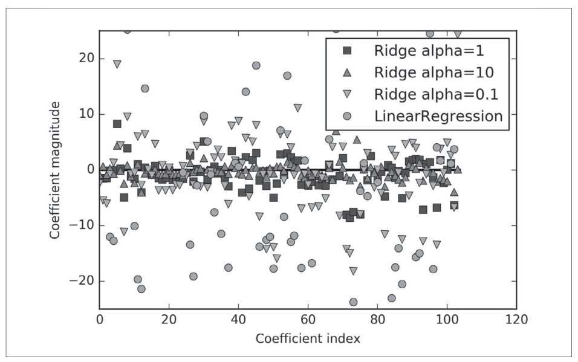
alpha=10 时系数大多在 −3 到 3 之间；alpha=1 时稍大；alpha=0.1 时范围更大；无正则化的线性回归（相当于 alpha=0）系数范围很大，许多点超出了图像范围。
另一种理解正则化影响的方法：固定 alpha，改变训练数据量。对波士顿房价数据集做二次抽样，在逐渐增大的子数据集上分别评估 LinearRegression 和 Ridge(alpha=1)——把模型性能画成数据集大小的函数，这样的图叫学习曲线（learning curve）：
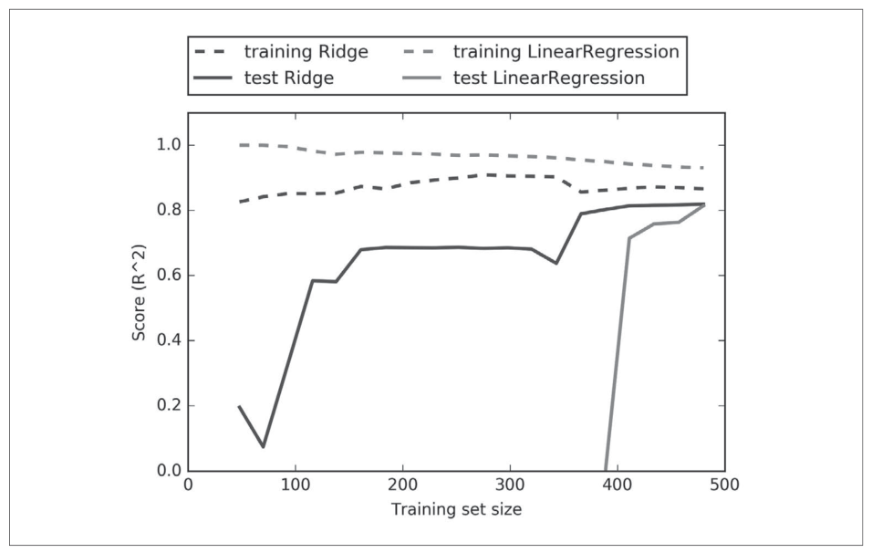
要点：无论哪个模型，训练分数都高于测试分数；岭回归因正则化，训练分数整体低于线性回归，但测试分数更高，特别是小数据集上——少于 400 个数据点时线性回归几乎学不到任何内容。随着数据增多两个模型都在提升，最终线性回归追上岭回归。如果有足够多的训练数据，正则化变得不那么重要（本例中二者重合恰好发生在整个数据集处，纯属巧合）。另一个有趣之处：线性回归的训练性能随数据增多在下降——数据越多，模型越难过拟合、越难记住所有数据。
4. lasso#
另一种正则化的线性回归是 Lasso。它同样约束系数使其接近 0，但用的是 L1 正则化（惩罚系数的 L1 范数，即系数绝对值之和 \(\sum_j |w_j|\)）。L1 的结果是：某些系数刚好为 0——某些特征被模型完全忽略，可以看作一种自动化的特征选择。系数为 0 让模型更容易解释，也能呈现模型最重要的特征。
# ===== 书 2.3.3 节：Lasso 与 alpha =====
from sklearn.linear_model import Lasso
lasso = Lasso().fit(X_train, y_train) # 默认 alpha=1.0
print("Training set score: {:.2f}".format(lasso.score(X_train, y_train)))
print("Test set score: {:.2f}".format(lasso.score(X_test, y_test)))
print("Number of features used: {}".format(np.sum(lasso.coef_ != 0)))
# 减小 alpha 并增大 max_iter（否则会警告应该增大 max_iter）
lasso001 = Lasso(alpha=0.01, max_iter=100000).fit(X_train, y_train)
print("alpha=0.01: train {:.2f} / test {:.2f}, features used {}".format(
lasso001.score(X_train, y_train), lasso001.score(X_test, y_test),
np.sum(lasso001.coef_ != 0)))
lasso00001 = Lasso(alpha=0.0001, max_iter=100000).fit(X_train, y_train)
print("alpha=0.0001: train {:.2f} / test {:.2f}, features used {}".format(
lasso00001.score(X_train, y_train), lasso00001.score(X_test, y_test),
np.sum(lasso00001.coef_ != 0)))
Training set score: 0.29
Test set score: 0.21
Number of features used: 4
alpha=0.01: train 0.90 / test 0.77, features used 33
alpha=0.0001: train 0.95 / test 0.64, features used 94
默认 alpha=1.0 时 Lasso 在训练集与测试集上表现都很差——欠拟合，105 个特征里只用了 4 个（按 2.3.3 第 2 节的勘误，应为 104 个）。与 Ridge 类似，Lasso 也有正则化参数 alpha 控制系数趋向 0 的强度。alpha=0.01 时训练/测试都更好（0.90/0.77），只用了 33 个特征，比 Ridge 略好且模型更易理解；但 alpha 太小（0.0001）会消除正则化效果、出现过拟合，得到与 LinearRegression 类似的结果（0.95/0.64，用了 94 个特征）。
# ===== 书 2.3.3 节：不同 alpha 的 lasso 与岭回归系数比较（图 2-14） =====
plt.plot(lasso.coef_, 's', label="Lasso alpha=1")
plt.plot(lasso001.coef_, '^', label="Lasso alpha=0.01")
plt.plot(lasso00001.coef_, 'v', label="Lasso alpha=0.0001")
plt.plot(ridge01.coef_, 'o', label="Ridge alpha=0.1")
plt.legend(ncol=2, loc=(0, 1.05))
plt.ylim(-25, 25)
plt.xlabel("Coefficient index")
plt.ylabel("Coefficient magnitude")
图 2-14 把各模型的系数画在一起：alpha=1 时不仅大部分系数是 0（三角形大多贴着横轴），其余系数也都很小；alpha=0.01 时大部分特征等于 0；alpha=0.0001 时大部分系数都不为 0 且很大。为了便于比较，图中用圆形画了 Ridge 的最佳结果：alpha=0.1 的 Ridge 预测性能与 alpha=0.01 的 Lasso 类似，但 Ridge 的所有系数都不为 0。
实践中一般首选岭回归。但如果特征很多、你认为只有其中几个是重要的，选 Lasso 可能更好；想要容易解释的模型，Lasso 只选择一部分输入特征，也更可解释。scikit-learn 还提供 ElasticNet 类，结合 Lasso 和 Ridge 的惩罚项——实践中这种结合效果最好，代价是要调两个参数（一个 L1、一个 L2）。
5. 用于分类的线性模型#
线性模型也广泛用于分类。先看二分类，预测公式：
和线性回归公式非常相似，但不再返回特征的加权求和，而是为预测设置了阈值（0）：函数值小于 0 预测类别 −1，大于 0 预测类别 +1。这个预测规则对所有用于分类的线性模型通用；不同的只是用什么方法找出系数 \(w\) 和截距 \(b\)。换句话说，（二元）线性分类器是利用直线、平面或超平面来分开两个类别的分类器，决策边界是输入的线性函数。
学习线性模型有很多算法，区别在两点：
- 系数和截距的特定组合对训练数据拟合好坏的度量方法（称为损失函数（loss function））；
- 是否使用正则化，以及使用哪种正则化。
由于数学上的技术原因，不可能调节 \(w\) 和 \(b\) 使误分类数量最少，但对许多应用而言，损失函数的选择并不重要。最常见的两种线性分类算法是 Logistic 回归（logistic regression）（实现于 linear_model.LogisticRegression）和线性支持向量机（linear support vector machine，线性 SVM）（实现于 svm.LinearSVC，SVC 代表支持向量分类器）。虽然 LogisticRegression 名字里有"回归"，它是一种分类算法，不要与 LinearRegression 混淆。
# ===== 书 2.3.3 节：LinearSVC 与 LogisticRegression 在 forge 上 =====
from sklearn.linear_model import LogisticRegression
from sklearn.svm import LinearSVC
X, y = mglearn.datasets.make_forge()
fig, axes = plt.subplots(1, 2, figsize=(10, 3))
for model, ax in zip([LinearSVC(), LogisticRegression()], axes):
clf = model.fit(X, y)
mglearn.plots.plot_2d_separator(clf, X, fill=False, eps=0.5,
ax=ax, alpha=.7)
mglearn.discrete_scatter(X[:, 0], X[:, 1], y, ax=ax)
ax.set_title("{}".format(clf.__class__.__name__))
ax.set_xlabel("Feature 0")
ax.set_ylabel("Feature 1")
axes[0].legend()
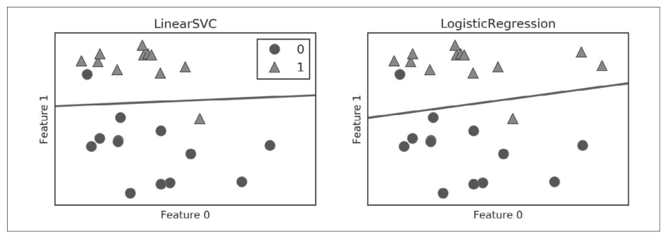
两个模型得到了相似的决策边界，且都有两个点分类错误。两个模型都默认使用 L2 正则化，就像 Ridge 对回归那样。决定正则化强度的权衡参数叫 C：C 值越大，正则化越弱——C 较大时模型尽可能将训练集拟合到最好；C 较小时模型更强调使系数向量 \(w\) 接近于 0。
C 的作用还有另一面：较小的 C 让算法尽量适应"大多数"数据点，较大的 C 更强调每个数据点都分类正确：
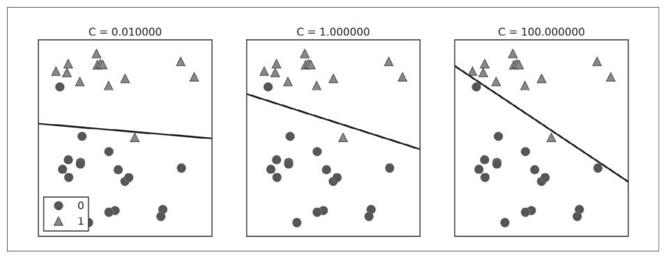
左图 C 很小、强正则化，模型选了一条相对水平的线，有两个点分类错误；中图 C 稍大，更关注两个错分样本，边界斜率变大；右图 C 非常大，类别 0 的点全部分对（类别 1 仍有一个错分——直线不可能分对全部点），但可能无法掌握类别的整体分布，很可能过拟合。
与回归类似，线性分类模型在低维空间中可能非常受限（边界只能是直线或平面），高维空间中却非常强大，特征越多，避免过拟合就越重要。在乳腺癌数据集上详细分析 LogisticRegression：
# ===== 书 2.3.3 节：LogisticRegression 在乳腺癌数据集上 =====
from sklearn.datasets import load_breast_cancer
cancer = load_breast_cancer()
X_train, X_test, y_train, y_test = train_test_split(
cancer.data, cancer.target, stratify=cancer.target, random_state=42)
logreg = LogisticRegression().fit(X_train, y_train) # 默认 C=1
print("C=1: train {:.3f} / test {:.3f}".format(
logreg.score(X_train, y_train), logreg.score(X_test, y_test)))
logreg100 = LogisticRegression(C=100).fit(X_train, y_train)
print("C=100: train {:.3f} / test {:.3f}".format(
logreg100.score(X_train, y_train), logreg100.score(X_test, y_test)))
logreg001 = LogisticRegression(C=0.01).fit(X_train, y_train)
print("C=0.01: train {:.3f} / test {:.3f}".format(
logreg001.score(X_train, y_train), logreg001.score(X_test, y_test)))
默认 C=1 给出相当好的性能（约 95%），但训练集与测试集性能非常接近，模型可能欠拟合；C=100 训练集精度更高、测试集也稍高——更复杂的模型性能更好；C=0.01 时训练集和测试集精度都比默认参数更小（在图 2-1 中把已经欠拟合的模型继续向左移）。
# ===== 书 2.3.3 节：不同 C 值的系数（图 2-17） =====
plt.plot(logreg.coef_.T, 'o', label="C=1")
plt.plot(logreg100.coef_.T, '^', label="C=100")
plt.plot(logreg001.coef_.T, 'v', label="C=0.001")
plt.xticks(range(cancer.data.shape[1]), cancer.feature_names, rotation=90)
plt.hlines(0, 0, cancer.data.shape[1])
plt.ylim(-5, 5)
plt.xlabel("Coefficient index")
plt.ylabel("Coefficient magnitude")
plt.legend()
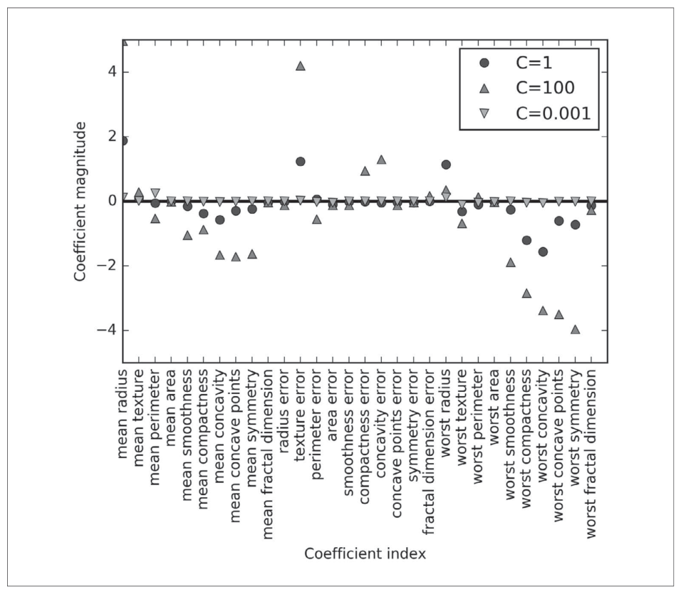
原书笔误：图例标签 C=0.001 实为 C=0.01
上面这段书印代码里，logreg001 是用 C=0.01 训练的（上一段代码如此），但作图时 label="C=0.001"。图例写错了一个数量级，应标 C=0.01。本笔记代码保持原书样子，读图时注意。
由于 LogisticRegression 默认应用 L2 正则化，系数图与图 2-12 中 Ridge 的结果类似：更强的正则化使系数更趋向 0，但永远不会正好等于 0。细看第 3 个系数"平均周长（mean perimeter）"：C=100 和 C=1 时为负，C=0.01 时为正且绝对值比 C=1 时还大。人们可能认为系数的正负告诉我们特征属于哪个类别（比如高"纹理错误"与恶性有关），但"平均周长"系数正负号随模型改变，说明较大的平均周长既可能被当作良性指标也可能被当作恶性指标——对线性模型系数的解释应始终持保留态度。
想要可解释性更强的模型，用 L1 正则化更好——它约束模型只使用少数几个特征：
# ===== 书 2.3.3 节：L1 惩罚的 Logistic 回归（图 2-18） =====
for C, marker in zip([0.001, 1, 100], ['o', '^', 'v']):
# 版本适配：原书 LogisticRegression(C=C, penalty="l1")——0.19 默认 solver=liblinear；1.x 默认 lbfgs 只支持 l2，需显式指定
lr_l1 = LogisticRegression(C=C, penalty="l1", solver="liblinear").fit(X_train, y_train)
print("Training accuracy of l1 logreg with C={:.3f}: {:.2f}".format(
C, lr_l1.score(X_train, y_train)))
print("Test accuracy of l1 logreg with C={:.3f}: {:.2f}".format(
C, lr_l1.score(X_test, y_test)))
plt.plot(lr_l1.coef_.T, marker, label="C={:.3f}".format(C))
plt.xticks(range(cancer.data.shape[1]), cancer.feature_names, rotation=90)
plt.hlines(0, 0, cancer.data.shape[1])
plt.xlabel("Coefficient index")
plt.ylabel("Coefficient magnitude")
plt.ylim(-5, 5)
plt.legend(loc=3)
Training accuracy of l1 logreg with C=0.001: 0.91
Test accuracy of l1 logreg with C=0.001: 0.92
Training accuracy of l1 logreg with C=1.000: 0.96
Test accuracy of l1 logreg with C=1.000: 0.96
Training accuracy of l1 logreg with C=100.000: 0.99
Test accuracy of l1 logreg with C=100.000: 0.98
图 2-18 是 L1 惩罚下三个 C 值学到的系数：许多系数恰为 0，模型只用了部分特征。用于二分类的线性模型与回归版有许多相似之处，主要差别在 penalty 参数——它决定正则化方式，也决定模型用所有特征还是只选一个子集。
版本差异：penalty=\"l1\" 需要指定 solver
原书（scikit-learn 0.19）LogisticRegression(C=C, penalty="l1") 可以直接跑：当时默认求解器是 liblinear，支持 L1。scikit-learn 0.22 起默认 solver 改为 lbfgs，它只支持 L2（和 none），L1 会直接报错。在 sklearn 1.x 下请写
LogisticRegression(C=C, penalty="l1", solver="liblinear")（或 solver="saga"，支持更大规模数据）。C 的默认值 1.0 与预测规则至今未变。
拓展：LogisticRegression 的"logistic"在哪
线性部分 \(z = w \cdot x + b\) 算完后，LogisticRegression 用 sigmoid/logistic 函数把 \(z\) 压成概率：
[ p = \sigma(z) = \frac{1}{1 + e^{-z}} ]
\(p > 0.5 \Leftrightarrow z > 0\)，所以预测规则与线性 SVM 完全一样——区别在于训练时的损失函数：Logistic 回归最大化训练数据的对数似然，因此天然输出概率；线性 SVM 只关心边界附近的点（第 5 章再细看）。sigmoid 也可以解释 2.4 节里 decision_function 与 predict_proba 的关系。
6. 用于多分类的线性模型#
许多线性分类模型只适用于二分类，不能轻易推广到多类别（Logistic 回归是例外）。把二分类算法推广到多分类的一种常见方法是"一对其余（one-vs.-rest）"：对每个类别都学习一个二分类模型，把这个类别与所有其他类别尽量分开——类别有几个，二分类模型就有几个。测试点上运行所有二分类器，对应类别上分数最高的分类器"胜出"，返回这个类别标签作为预测结果。每个类别对应一个系数向量 \(w\) 和一个截距 \(b\)，分类置信方程 \(w[0] \cdot x[0] + \dots + w[p] \cdot x[p] + b\) 结果中最大值对应的类别即预测类别。多分类 Logistic 回归背后的数学与"一对其余"稍有不同，但同样对每个类别有一个系数向量和一个截距，预测方法相同。
用三个高斯分布采样的二维玩具数据集演示：
# ===== 书 2.3.3 节：三分类玩具数据集与 LinearSVC =====
from sklearn.datasets import make_blobs
X, y = make_blobs(random_state=42)
mglearn.discrete_scatter(X[:, 0], X[:, 1], y)
plt.xlabel("Feature 0")
plt.ylabel("Feature 1")
plt.legend(["Class 0", "Class 1", "Class 2"])
linear_svm = LinearSVC().fit(X, y)
print("Coefficient shape: ", linear_svm.coef_.shape) # (3, 2)
print("Intercept shape: ", linear_svm.intercept_.shape) # (3,)
coef_ 形状是 \((3, 2)\)：每行是一个类别的系数向量，每列是一个特征的系数；intercept_ 是一维数组，保存每个类别的截距。把 3 个二分类器的直线画出来：
# ===== 书 2.3.3 节：画出每个类别的决策直线 =====
mglearn.discrete_scatter(X[:, 0], X[:, 1], y)
line = np.linspace(-15, 15)
for coef, intercept, color in zip(linear_svm.coef_, linear_svm.intercept_,
['b', 'r', 'g']):
plt.plot(line, -(line * coef[0] + intercept) / coef[1], c=color)
plt.ylim(-10, 15)
plt.xlim(-10, 8)
plt.xlabel("Feature 0")
plt.ylabel("Feature 1")
plt.legend(['Class 0', 'Class 1', 'Class 2', 'Line class 0', 'Line class 1',
'Line class 2'], loc=(1.01, 0.3))
图 2-20 中所有类别 0 的点都在"类别 0 的线"上方的"类别 0"一侧，同时被类别 1 和类别 2 的分类器划为"其余"——这一区域的点最终会被划为类别 0（类别 0 的置信方程结果大于 0，另两个都小于 0）。但中间的三角形区域呢？三个二分类器都把它划为"其余"——答案是分类方程结果最大的那个类别，即最接近的那条线对应的类别：
# ===== 书 2.3.3 节：完整的多分类决策边界 =====
mglearn.plots.plot_2d_classification(linear_svm, X, fill=True, alpha=.7)
mglearn.discrete_scatter(X[:, 0], X[:, 1], y)
line = np.linspace(-15, 15)
for coef, intercept, color in zip(linear_svm.coef_, linear_svm.intercept_,
['b', 'r', 'g']):
plt.plot(line, -(line * coef[0] + intercept) / coef[1], c=color)
plt.legend(['Class 0', 'Class 1', 'Class 2', 'Line class 0', 'Line class 1',
'Line class 2'], loc=(1.01, 0.3))
plt.xlabel("Feature 0")
plt.ylabel("Feature 1")
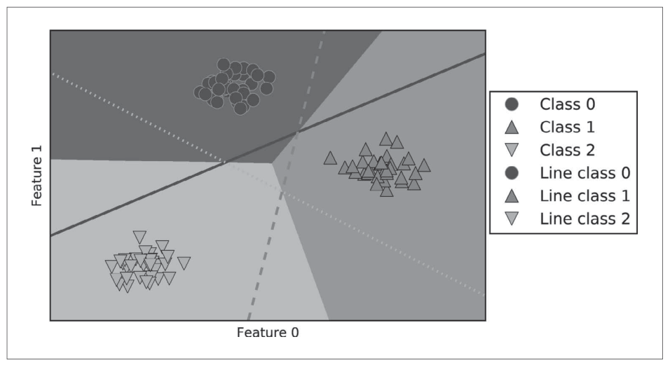
7. 优点、缺点和参数#
线性模型的主要参数是正则化参数：回归模型里叫 alpha，LinearSVC 和 LogisticRegression 里叫 C。alpha 较大或 C 较小，说明模型比较简单。对回归模型而言调节这些参数尤其重要，通常在对数尺度上搜索 C 和 alpha。还要决定用 L1 还是 L2：
- 假定只有几个特征真正重要 → 用 L1；
- 否则默认 L2；
- 模型可解释性重要时 L1 也有帮助（只用到几个特征，容易说明哪些特征重要、作用多大）。
优点：训练速度非常快，预测速度也快；可推广到非常大的数据集，对稀疏数据也有效。数据包含数十万甚至上百万样本时，可以研究 LogisticRegression 和 Ridge 的 solver='sag' 选项（处理大型数据比默认值快），或用 SGDClassifier / SGDRegressor——它们对本节线性模型实现了可扩展性更强的版本。利用预测公式理解"如何预测"相对容易。
缺点：往往并不完全清楚系数为什么是这样的，数据集中包含高度相关的特征时尤为突出，很难对系数做出解释。特征数量大于样本数量时线性模型通常表现很好；也常用于非常大的数据集（其他模型训练不可行）；但在更低维空间中，其他模型的泛化性能可能更好（2.3.7 节会给出线性模型不适用的例子）。
侧栏：方法链（method chaining） scikit-learn 所有模型的
fit方法都返回self，因此可以像本章一直做的那样一行完成初始化和拟合：logreg = LogisticRegression().fit(X_train, y_train)这种方法调用的拼接（先__init__，再fit）叫方法链。另一个常见用法是一行同时 fit 和 predict：y_pred = logreg.fit(X_train, y_train).predict(X_test)甚至y_pred = LogisticRegression().fit(X_train, y_train).predict(X_test)。不过最后这种写法并不完美：一行发生太多事情，代码难读；而且拟合后的模型没保存在任何变量中，既不能查看也不能用它预测其他数据。
2.3.4 朴素贝叶斯分类器#
朴素贝叶斯分类器与线性模型非常相似，但训练速度往往更快。代价是泛化能力通常比线性分类器（如 LogisticRegression 和 LinearSVC）稍差。它高效的原因在于：通过单独查看每个特征来学习参数，从每个特征中收集简单的类别统计数据。
scikit-learn 实现了三种朴素贝叶斯分类器：
| 类 | 输入数据假定 | 典型用途 |
|---|---|---|
GaussianNB |
任意连续数据 | 高维数据 |
BernoulliNB |
二分类（0/1）数据 | 文本（词是否出现） |
MultinomialNB |
计数数据（特征的整数计数） | 文本（词频），大型文档上通常优于 BernoulliNB |
BernoulliNB 计算每个类别中每个特征不为 0 的元素个数。用一个 4 个数据点、4 个二值特征的小例子说明：
# ===== 书 2.3.4 节：BernoulliNB 统计的非零元素计数 =====
X = np.array([[0, 1, 0, 1],
[1, 0, 1, 1],
[0, 0, 0, 1],
[1, 0, 1, 0]])
y = np.array([0, 1, 0, 1])
counts = {}
for label in np.unique(y):
# 对每个类别进行遍历
# 计算（求和）每个特征中 1 的个数
counts[label] = X[y == label].sum(axis=0)
print("Feature counts:\n{}".format(counts))
类别 0（第 1、3 个数据点）：第 1 个特征有 2 个为零、0 个不为零；第 2 个特征 1 个为零、1 个不为零……对类别 1 也做同样计数。另外两种朴素贝叶斯统计的数据略有不同：MultinomialNB 计算每个类别中每个特征的平均值，GaussianNB 保存每个类别中每个特征的平均值和标准差。
预测时，将数据点与每个类别的统计数据比较，最匹配的类别就是预测结果。有趣的是，MultinomialNB 和 BernoulliNB 的预测公式形式与线性模型完全相同（见 2.3.3 节），但朴素贝叶斯模型 coef_ 的含义与线性模型稍有不同——它并不等于 \(w\)。
优点、缺点和参数。MultinomialNB 和 BernoulliNB 都只有一个参数 alpha，用于控制模型复杂度：算法向数据中添加 alpha 这么多的"虚拟数据点"，对所有特征都取正值，从而把统计数据平滑化（smoothing）。alpha 越大，平滑化越强，模型复杂度越低。算法性能对 alpha 的鲁棒性相对较好，也就是说它对性能影响不大，但调整通常会使精度略有提高。GaussianNB 主要用于高维数据，另两种广泛用于稀疏计数数据（如文本）。
朴素贝叶斯与线性模型的许多优缺点相同：训练和预测都快、训练过程容易理解、对高维稀疏数据效果好、对参数相对鲁棒。它是很好的基准模型，常用于非常大的数据集——大到连线性模型训练都要花大量时间的那种。
拓展：为什么"朴素"？
朴素贝叶斯的名字来自贝叶斯定理加一个"天真"的假设。预测类别时真正想要的是后验概率 \(P(y \mid x_1,\dots,x_p)\)，按贝叶斯定理 [ P(y \mid x_1, \dots, x_p) \propto P(y) \prod_{j=1}^{p} P(x_j \mid y) ] 把联合分布拆成每个特征的连乘，需要假设"给定类别，特征之间相互独立"——现实中几乎从不成立（比如文本里"San"后面大概率是"Francisco"），所以说它"朴素"。就算假设不成立，分类结果往往照样够用；前面说的 alpha 平滑则解决"某特征在某类别下从没出现过、概率估成 0"的问题。
2.3.5 决策树#
决策树（decision tree） 广泛用于分类和回归任务。本质上，它从一层层的 if/else 问题中学习并得出结论，类似"20 Questions"游戏：想区分熊、鹰、企鹅和海豚四种动物，先用尽量少的是/否问题锁定答案——先问"有没有羽毛"（把候选缩到两种），有羽毛再问"会不会飞"区分鹰和企鹅，没羽毛则问"有没有鳍"区分海豚和熊。这一系列问题就是一棵决策树（图 2-22）：
树的每个结点代表一个问题或一个包含答案的终结点（也叫叶结点（leaf）），树的边把问题的答案与将问的下一个问题连接起来。用机器学习的语言说：为了区分四类动物，我们利用三个特征（"有没有羽毛""会不会飞""有没有鳍"）构建模型。而决策树算法可以从数据中自动学习这样的模型，无需人为设计。
1. 构造决策树#
在图 2-23 的二维分类数据集上构造决策树。它由 2 个半月形组成，每个类别 50 个数据点，称为 two_moons：
学习决策树，就是学习一系列 if/else 问题（算法里叫测试（test），别与测试集混淆），使我们能以最快的速度得到正确答案。数据通常不是"是/否"二元特征，而是连续特征，对连续数据的测试形式是："特征 i 的值是否大于 a？"
为了构造决策树，算法搜遍所有可能的测试，找出对目标变量来说信息量最大的那一个。第一个测试把数据集在 \(x[1] = 0.0596\) 处划分，最大限度地区分两类点：根结点代表整个数据集（类别 0 有 50 个点、类别 1 有 50 个点），按测试 \(x[1] \le 0.0596\) 的真假划分——测试为真的点进入左结点（类别 0 有 2 个、类别 1 有 32 个），否则进入右结点（类别 0 有 48 个、类别 1 有 18 个），对应图 2-24 中一条水平黑线切出的上下两个区域。第一次划分已区分得不错，但底部区域仍混有类别 0 的点、顶部区域仍混有类别 1 的点，于是在两个区域中重复寻找最佳测试：信息量最大的下一次划分基于 \(x[0]\)（竖直切分，见图 2-25）。
这一递归过程生成一棵二元决策树，每个结点包含一个测试。也可以把每个测试看成沿一条轴对数据划分——这是分层划分的视角：由于每个测试仅关注一个特征，划分后的区域边界始终与坐标轴平行。
递归划分一直进行，直到划分后的每个区域（每个叶结点）只包含单一目标值（单一类别或单一回归值）。若某叶结点包含的数据点目标值都相同，这个叶结点就是纯的（pure）。图 2-26 是最终的划分结果——为了把每个区域变纯，树长得非常深：
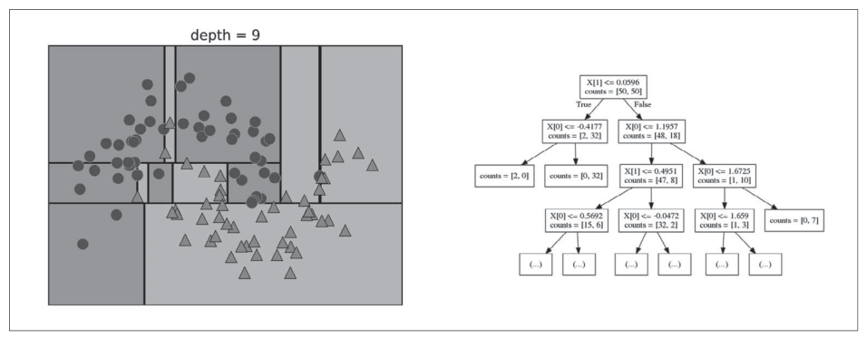
预测时，查看新点位于特征空间划分的哪个区域，把该区域的多数目标值（纯叶结点即单一目标值）作为预测结果；从根结点遍历，每一步走向左还是右取决于是否满足测试。
决策树也可用于回归，方法完全相同：基于每个结点的测试遍历树，找到新点所属叶结点，该叶结点中所有训练点的平均目标值就是输出。
2. 控制决策树的复杂度#
通常来说，构造决策树直到所有叶结点都纯，会导致模型非常复杂、对训练数据高度过拟合——纯叶结点意味着训练集精度 100%，每个点都落在分类正确的叶结点里。图 2-26 左图就能看出过拟合：类别 0 的点中间围出一块类别 1 的区域，最右侧还包出一条只为一个异常点服务的小条——这不是人们想象的决策边界。
防止过拟合有两种常见策略：
- 预剪枝（pre-pruning）：及早停止树的生长。限制条件可以包括树的最大深度、叶结点的最大数目，或规定结点中数据点的最小数目以防继续划分；
- 后剪枝（post-pruning，剪枝 pruning）：先构造树，随后删除或折叠信息量很少的结点。
scikit-learn 的决策树在 DecisionTreeRegressor 和 DecisionTreeClassifier 类中实现，只实现了预剪枝，没有实现后剪枝。在乳腺癌数据集上先看完全不剪枝的默认模型（固定 random_state 用于内部解决平局问题）：
# ===== 书 2.3.5 节：未剪枝与 max_depth=4 的决策树 =====
from sklearn.tree import DecisionTreeClassifier
cancer = load_breast_cancer()
X_train, X_test, y_train, y_test = train_test_split(
cancer.data, cancer.target, stratify=cancer.target, random_state=42)
tree = DecisionTreeClassifier(random_state=0)
tree.fit(X_train, y_train)
print("未剪枝 train {:.3f} / test {:.3f}".format(
tree.score(X_train, y_train), tree.score(X_test, y_test)))
tree = DecisionTreeClassifier(max_depth=4, random_state=0)
tree.fit(X_train, y_train)
print("深度 4 train {:.3f} / test {:.3f}".format(
tree.score(X_train, y_train), tree.score(X_test, y_test)))
不出所料，未剪枝的树训练集精度 100%——叶结点全是纯的，树深足以完美记住训练数据的所有标签；测试集精度 0.937，比之前约 95% 的线性模型略低。限制深度（max_depth=4，即最多连续问 4 个问题）可以在完美拟合训练数据之前阻止树的展开：训练精度降到 0.988，测试精度升到 0.951。
3. 分析决策树#
用 tree 模块的 export_graphviz 函数把树可视化。它生成 .dot 格式的文件（保存图形的文本格式）；给结点上色（颜色表示每个结点的多数类别），并传入类别名称和特征名称：
# ===== 书 2.3.5 节：把树导出为 graphviz 并显示 =====
from sklearn.tree import export_graphviz
export_graphviz(tree, out_file="tree.dot", class_names=["malignant", "benign"],
feature_names=cancer.feature_names, impurity=False, filled=True)
import graphviz
with open("tree.dot") as f:
dot_graph = f.read()
graphviz.Source(dot_graph)
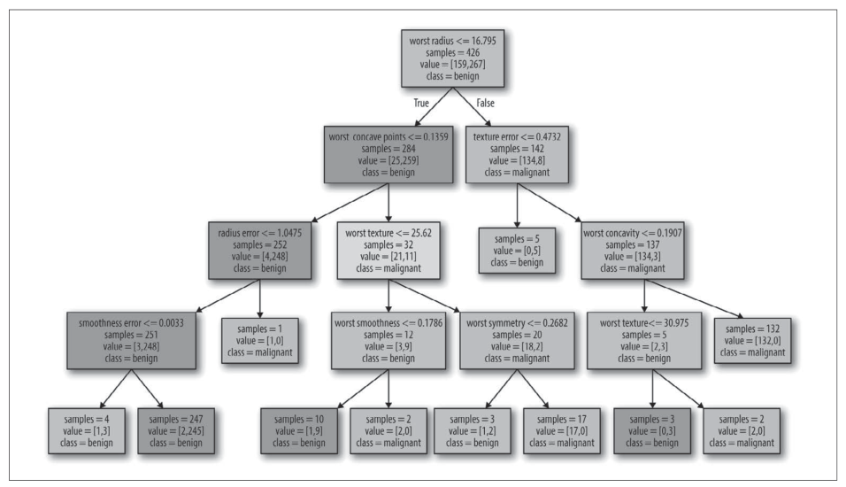
运行提示：需要 graphviz
import graphviz 需要 pip 安装 Python 包 graphviz，同时系统里要装 Graphviz 本体（dot 命令），Windows 下记得把 bin 目录加进 PATH。只想"看"树的话，新版 scikit-learn 还提供 sklearn.tree.plot_tree(tree, feature_names=..., class_names=..., filled=True)，不需要任何外部依赖，可以一行出图。
树的可视化有助于理解算法如何预测，也是易于向非专家解释的机器学习算法的优秀示例。不过深度只有 4 的树就已经有点太大了；深度 10 并不罕见，更难理解。一个有用的观察方法是找出大部分数据的实际路径：图中每个结点的 samples 给出该结点中的样本个数，value 给出每个类别的样本个数。看 worst radius <= 16.795 分支右侧的子结点：只包含 8 个良性样本，却有 134 个恶性样本——树这一侧的其余分支只是利用更精细的区别把那 8 个良性样本分离出来；第一次划分右侧的 142 个样本中，几乎所有（132 个）最后都进入最右侧的叶结点。再看根结点左侧（worst radius > 16.795）：25 个恶性样本、259 个良性样本，几乎所有良性样本进入左数第二个叶结点，大部分其他叶结点只包含很少的样本。
4. 树的特征重要性#
除了看整棵树，还可以用特征重要性（feature importance） 总结树的工作原理：它为每个特征对树决策的重要性排序，是 0 到 1 之间的数字——0 表示"根本没用到"，1 表示"完美预测目标值"，所有特征的重要性求和恒为 1：
# ===== 书 2.3.5 节：特征重要性 =====
print("Feature importances:\n{}".format(tree.feature_importances_))
def plot_feature_importances_cancer(model):
n_features = cancer.data.shape[1]
plt.barh(range(n_features), model.feature_importances_, align='center')
plt.yticks(np.arange(n_features), cancer.feature_names)
plt.xlabel("Feature importance")
plt.ylabel("Feature")
plot_feature_importances_cancer(tree)
Feature importances:
[ 0. 0. 0. 0. 0. 0. 0. 0. 0. 0. 0.01
0.048 0. 0. 0.002 0. 0. 0. 0. 0. 0.727 0.046
0. 0. 0.014 0. 0.018 0.122 0.012 0. ]
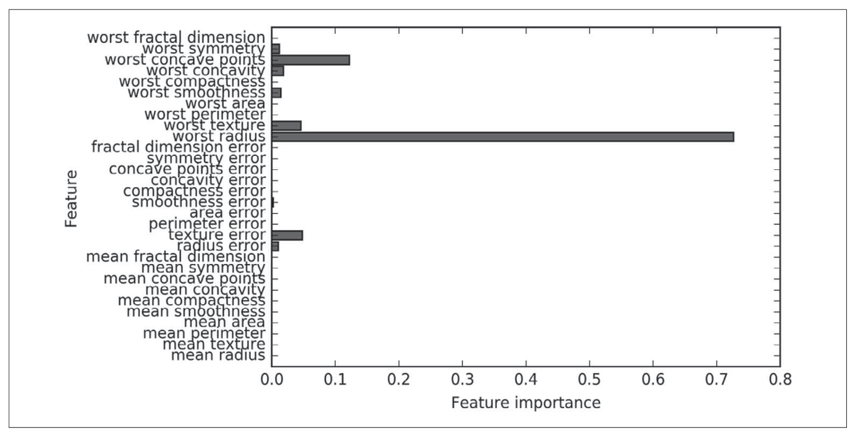
worst radius（最大半径）正是第一层划分用到的特征，证实了前面的观察：第一层划分已经把两个类别区分得很好。但注意两点解读陷阱：
- 某个特征的 feature_importance 很小，不代表这个特征没有信息，只能说明该特征没有被树选中——可能另一个特征包含了同样的信息；
- 与线性模型的系数不同，特征重要性始终为正数，也不能说明特征对应哪个类别。它告诉我们 worst radius 很重要，但没告诉我们半径大是良性还是恶性——特征和类别之间甚至可能根本没有这种单调关系：
这个二维数据集的所有信息都在 X[1] 中（X[0] 完全没用，重要性为 0），但 X[1] 与类别不是单调关系——不能说"较大的 X[1] 对应类别 0"。
回归树的用法与分析与分类树非常类似（DecisionTreeRegressor）。但基于树的回归模型有一个特殊性质：不能外推（extrapolate），不能在训练数据范围之外进行预测。用计算机内存（RAM）历史价格数据集演示——x 轴为日期，y 轴为那一年 1MB RAM 的价格：
# ===== 书 2.3.5 节：RAM 价格数据与回归树 =====
import pandas as pd
# 版本适配：ram_price.csv 随本站 nb/data/ 附带（nb 目录下 data/ram_price.csv）
import os
_NB_DATA = r"E:\Desktop\深度学习\mynotes\docs\Python机器学习基础教程\nb\data"
ram_prices = pd.read_csv(os.path.join(_NB_DATA, "ram_price.csv"))
plt.semilogy(ram_prices.date, ram_prices.price)
plt.xlabel("Year")
plt.ylabel("Price in $/Mbyte")
图 2-31 用对数坐标绘制了 RAM 价格的历史发展。注意 y 轴的对数刻度——对数坐标下二者线性关系非常好，预测应该相对容易。用 2000 年前的数据训练、预测 2000 年后的价格，只用日期作特征，对比 DecisionTreeRegressor 和 LinearRegression。对价格取对数使关系更线性（对树模型没有影响，对 LinearRegression 影响很大；第 4 章细讲），训练预测后再用指数映射做对数变换的逆运算：
# ===== 书 2.3.5 节：决策树与线性回归预测 RAM 价格 =====
from sklearn.tree import DecisionTreeRegressor
# 利用历史数据预测 2000 年后的价格
data_train = ram_prices[ram_prices.date < 2000]
data_test = ram_prices[ram_prices.date >= 2000]
# 基于日期来预测价格
# 版本适配：原书 X_train = data_train.date[:, np.newaxis]——pandas 2.x 起 Series/Index 多维索引已移除，先转 NumPy
X_train = data_train.date.to_numpy().reshape(-1, 1)
# 利用对数变换得到数据和目标之间更简单的关系
y_train = np.log(data_train.price)
tree = DecisionTreeRegressor().fit(X_train, y_train)
linear_reg = LinearRegression().fit(X_train, y_train)
# 对所有数据进行预测
# 版本适配：原书 X_all = ram_prices.date[:, np.newaxis]——pandas 2.x 起 Series/Index 多维索引已移除，先转 NumPy
X_all = ram_prices.date.to_numpy().reshape(-1, 1)
pred_tree = tree.predict(X_all)
pred_lr = linear_reg.predict(X_all)
# 对数变换逆运算
price_tree = np.exp(pred_tree)
price_lr = np.exp(pred_lr)
plt.semilogy(data_train.date, data_train.price, label="Training data")
plt.semilogy(data_test.date, data_test.price, label="Test data")
plt.semilogy(ram_prices.date, price_tree, label="Tree prediction")
plt.semilogy(ram_prices.date, price_lr, label="Linear prediction")
plt.legend()
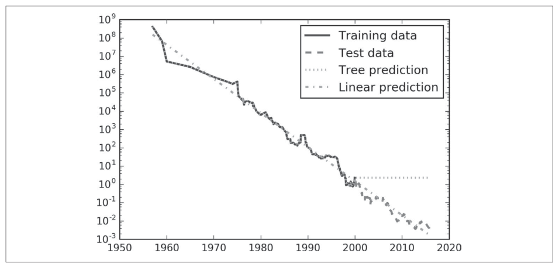
版本差异：新版 pandas 下 date[:, np.newaxis] 会报错
data_train.date[:, np.newaxis] 依赖旧版 pandas 对 Series 的多维索引回退行为，pandas 2.x 起会直接抛 KeyError。跨版本安全写法是先转 NumPy 再加一维：
X_train = data_train.date.to_numpy().reshape(-1, 1)、X_all = ram_prices.date.to_numpy().reshape(-1, 1)。数值与原书写法完全一致。
两个模型的差异非常明显：线性模型用一条直线近似数据（对数坐标下），对 2000 年后的价格给出了相当好的预测，只是忽略了一些细微变化；树模型完美预测了训练数据（没有限制复杂度，等于记住了整个数据集），但输入超出训练数据范围后，模型只能持续预测最后一个已知数据点——树不能在训练数据范围之外生成"新的"响应，所有基于树的模型都有这个缺点。
拓展：树真的不能做时间序列吗
原书脚注专门澄清：这个例子不是说树对时间序列没用——利用树预测"价格会涨还是跌"这类问题可以有很好的表现。例子要说明的是树预测方式的特殊性质：它只会输出训练时见过的目标值组合（叶结点的均值），不会像线性模型那样按斜率"推演"出从未见过的新数值。需要外推的趋势预测任务，选参数化模型（线性、指数平滑等）更合适。
5. 优点、缺点和参数#
控制决策树复杂度的参数是预剪枝参数，在树完全展开之前停止构造。通常选择一种预剪枝策略（设置 max_depth、max_leaf_nodes 或 min_samples_leaf）就足以防止过拟合。
优点：一是模型容易可视化，非专家也容易理解（至少对较小的树）；二是完全不受数据缩放的影响——每个特征被单独处理，划分不依赖于缩放，不需要归一化或标准化之类的预处理。特征的尺度完全不一样、或二元特征与连续特征同时存在时，决策树效果很好。
缺点：即使做了预剪枝，也经常过拟合，泛化性能很差。因此在大多数应用中，往往使用下面的集成方法来替代单棵决策树。
2.3.6 决策树集成#
集成（ensemble） 是合并多个机器学习模型来构建更强大模型的方法。已证明有两种集成模型对大量分类和回归数据集都有效，二者都以决策树为基础：随机森林（random forest） 和梯度提升决策树（gradient boosted decision tree）。
1. 随机森林#
决策树的主要缺点是经常对训练数据过拟合，随机森林就是解决这个问题的一种方法。它的思路：每棵树的预测可能都相对较好，但都对部分数据过拟合——如果构造很多树、每棵都以不同的方式过拟合，对这些树的结果取平均就能降低过拟合。既能减少过拟合又能保持树的预测能力，这一点可以在数学上严格证明。
要构造随机森林，需要确定树的个数（RandomForestRegressor / RandomForestClassifier 的 n_estimators 参数）。这些树在构造时彼此完全独立，算法对每棵树做不同的随机选择，确保树和树之间有区别。随机性来自两处：
- 构造树的数据点：先对数据做自助采样（bootstrap sample）——从 n_samples 个数据点中有放回地随机抽取一个样本，重复 n_samples 次。得到的数据集与原数据集大小相同，但有些数据点会缺失（约三分之一），有些会重复。比如列表 ['a', 'b', 'c', 'd'] 的自助采样可能是 ['b', 'd', 'd', 'c']，也可能是 ['d', 'a', 'd', 'a']。
- 每次划分测试的特征：在每个结点处，算法随机选择特征的一个子集，并只用其中一个特征寻找最佳测试（而不是对所有特征找最佳测试）。特征个数由 max_features 参数控制；每个结点的特征子集选择相互独立。
这两种随机化共同保证森林中所有树都不相同。max_features 是关键参数：等于 n_features 时每次划分考虑所有特征，特征选择没有随机性（自助采样的随机性仍在）；等于 1 时划分时无法选择特征，只能对随机选中的某个特征搜索不同阈值。max_features 较大 → 各树十分相似，借助最独特的特征轻松拟合数据；max_features 较小 → 各树差异很大，为拟合数据每棵树的深度都要很大。
预测时对每棵树分别预测：回归取平均值；分类用"软投票（soft voting）"——每棵树给出每个可能标签的概率，对所有树的预测概率取平均，概率最大的类别即预测结果。
把 5 棵树的随机森林用到 two_moons 数据集上：
# ===== 书 2.3.6 节：5 棵树的随机森林 =====
from sklearn.ensemble import RandomForestClassifier
from sklearn.datasets import make_moons
X, y = make_moons(n_samples=100, noise=0.25, random_state=3)
X_train, X_test, y_train, y_test = train_test_split(X, y, stratify=y,
random_state=42)
forest = RandomForestClassifier(n_estimators=5, random_state=2)
forest.fit(X_train, y_train)
# ===== 书 2.3.6 节：可视化每棵树与整个森林的决策边界 =====
fig, axes = plt.subplots(2, 3, figsize=(20, 10))
for i, (ax, tree) in enumerate(zip(axes.ravel(), forest.estimators_)):
ax.set_title("Tree {}".format(i))
mglearn.plots.plot_tree_partition(X_train, y_train, tree, ax=ax)
mglearn.plots.plot_2d_separator(forest, X_train, fill=True, ax=axes[-1, -1],
alpha=.4)
axes[-1, -1].set_title("Random Forest")
mglearn.discrete_scatter(X_train[:, 0], X_train[:, 1], y_train)
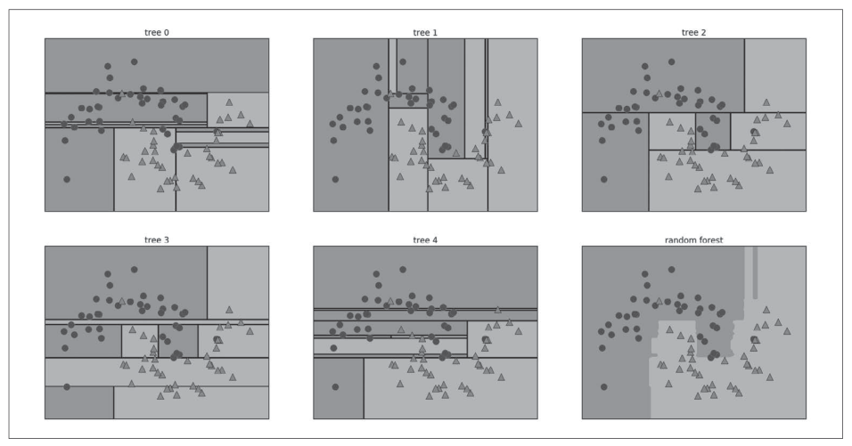
5 棵树学到的决策边界大不相同。每棵树都犯了一些错误——因为自助采样，画出的一些训练点实际并不在这棵树的训练集里。随机森林比单独每一棵树的过拟合都小，给出的决策边界更符合直觉。实际应用中会用到更多棵树（通常几百或上千），边界更平滑。
再看 100 棵树的随机森林在乳腺癌数据集上的表现：
# ===== 书 2.3.6 节：乳腺癌数据集上的随机森林 =====
X_train, X_test, y_train, y_test = train_test_split(
cancer.data, cancer.target, random_state=0)
forest = RandomForestClassifier(n_estimators=100, random_state=0)
forest.fit(X_train, y_train)
print("Accuracy on training set: {:.3f}".format(forest.score(X_train, y_train)))
print("Accuracy on test set: {:.3f}".format(forest.score(X_test, y_test)))
不调节任何参数，随机森林精度 97%，比线性模型或单棵决策树都好。可以调 max_features 或像单棵树那样预剪枝，但默认参数通常就很好。
与决策树类似，随机森林也给出特征重要性——把森林中所有树的特征重要性求和取平均，一般比单棵树给出的更可靠：
图 2-34 中，与单棵树相比随机森林有更多特征的重要性不为零；它同样给 worst radius 很大的重要性，但总体上选择 worst perimeter（最大周长）作为信息量最大的特征。由于构造过程的随机性，算法需要考虑多种可能的解释——随机森林比单棵树更能从总体把握数据的特征。
优点、缺点和参数。随机森林用于回归和分类，是目前应用最广泛的机器学习方法之一：非常强大，通常不需要反复调参就能给出很好的结果，也不需要数据缩放。本质上它拥有决策树的所有优点，同时弥补了一些缺陷。仍然使用单棵决策树的理由是需要决策过程的紧凑表示——几十上百棵树基本不可能详细解释，而且随机森林中树的深度往往比决策树更大（用了特征子集）；需要以可视化方式向非专家总结预测过程时，选单棵树更好。
- 在大型数据集上构建随机森林可能费时间，但很容易并行到多核：
n_jobs参数调节使用的内核个数，2 个内核训练速度加倍；设 n_jobs=-1 使用计算机的所有内核；大于内核个数没有用。 - 随机森林本质是随机的，不同 random_state 可以彻底改变构建的模型；树越多，对随机状态选择的鲁棒性越好。希望结果可重现就固定 random_state。
- 对维度非常高的稀疏数据（如文本）表现往往不好，这种数据用线性模型更合适。即使非常大的数据集表现通常也不错，但需要更大内存，训练和预测速度也比线性模型慢——时间和内存要紧时换线性模型可能更明智。
需要调节的重要参数：n_estimators 和 max_features，可能还有预剪枝选项（如 max_depth）。n_estimators 总是越大越好——对更多树取平均可降低过拟合、集成更鲁棒；但收益递减，且树越多越费内存和时间，经验法则是"在你的时间/内存允许的情况下尽量多"。max_features 决定每棵树的随机性大小，较小可降低过拟合；好经验是用默认值：分类默认 max_features=sqrt(n_features)，回归默认 max_features=n_features。增大 max_features 或 max_leaf_nodes 有时也能提高性能，还可以大大降低训练和预测的时间与空间要求。
2. 梯度提升回归树（梯度提升机）#
梯度提升回归树（gradient boosted regression tree） 是另一种集成方法，合并多个决策树构建更强大的模型。虽然名字里有"回归"，它既可用于回归也可用于分类。与随机森林不同：
- 梯度提升采用连续的方式构造树，每棵树都试图纠正前一棵树的错误；
- 默认没有随机化，用的是强预剪枝；
- 树通常很浅（深度 1 到 5），占用内存少、预测快。
主要思想是合并许多简单模型（这个语境中叫弱学习器（weak learner））：每棵树只能对部分数据做出好的预测，树越加越多，性能不断迭代提高。梯度提升树经常是机器学习竞赛的优胜者，广泛应用于业界；与随机森林相比，它通常对参数设置更敏感，但参数正确时精度更高。
除预剪枝与树的数量之外，另一个重要参数是 learning_rate（学习率），控制每棵树纠正前一棵树错误的强度：较高的学习率意味着每棵树做出较强的修正，模型更复杂。通过增大 n_estimators 添加更多树也可以增加模型复杂度——模型有更多机会纠正训练集上的错误。
# ===== 书 2.3.6 节：GradientBoostingClassifier 默认参数 =====
from sklearn.ensemble import GradientBoostingClassifier
X_train, X_test, y_train, y_test = train_test_split(
cancer.data, cancer.target, random_state=0)
gbrt = GradientBoostingClassifier(random_state=0) # 默认 100 棵树、深度 3、学习率 0.1
gbrt.fit(X_train, y_train)
print("默认: train {:.3f} / test {:.3f}".format(
gbrt.score(X_train, y_train), gbrt.score(X_test, y_test)))
gbrt = GradientBoostingClassifier(random_state=0, max_depth=1)
gbrt.fit(X_train, y_train)
print("max_depth=1: train {:.3f} / test {:.3f}".format(
gbrt.score(X_train, y_train), gbrt.score(X_test, y_test)))
gbrt = GradientBoostingClassifier(random_state=0, learning_rate=0.01)
gbrt.fit(X_train, y_train)
print("lr=0.01: train {:.3f} / test {:.3f}".format(
gbrt.score(X_train, y_train), gbrt.score(X_test, y_test)))
默认: train 1.000 / test 0.958
max_depth=1: train 0.991 / test 0.972
lr=0.01: train 0.988 / test 0.965
默认参数（100 棵树、最大深度 3、学习率 0.1）训练集精度 100%，很可能过拟合。降低过拟合的两条路：限制最大深度加强预剪枝，或降低学习率——两种方法都降低了训练集精度。本例中减小树的最大深度显著提升了泛化性能（0.958→0.972），降低学习率仅稍稍提高（0.965）。
# ===== 书 2.3.6 节：梯度提升的特征重要性 =====
gbrt = GradientBoostingClassifier(random_state=0, max_depth=1)
gbrt.fit(X_train, y_train)
plot_feature_importances_cancer(gbrt)
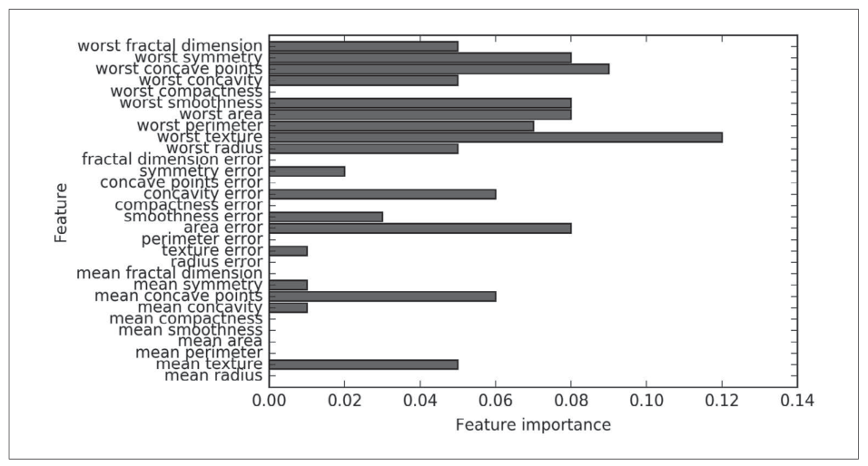
100 棵树（即使深度都是 1）逐一查看不现实，所以也用特征重要性来理解模型。梯度提升树的特征重要性与随机森林有些类似，不过梯度提升完全忽略了某些特征。
由于两种方法在类似的数据上表现都很好，常用做法是先试随机森林（鲁棒性好）；如果随机森林效果不错但预测时间太长，或精度小数点后第二位的提高也很重要，切换成梯度提升通常有用。想把梯度提升用于大规模问题，可以研究 xgboost 包及其 Python 接口——写作本书时它在许多数据集上比 scikit-learn 的梯度提升实现快（有时调参也更简单）。
优点、缺点和参数。梯度提升决策树是监督学习中最强大也最常用的模型之一。主要缺点：需要仔细调参，训练时间可能较长。与其他基于树的模型类似，不需要数据缩放就表现得很好，适用于二元特征与连续特征同时存在的数据集；也通常不适用于高维稀疏数据。
主要参数：
- n_estimators（树的数量）与 learning_rate 高度相关：learning_rate 越低，就需要更多的树来构建相似复杂度的模型。随机森林的 n_estimators 越大越好，梯度提升不同：增大 n_estimators 会让模型更复杂、可能过拟合。通常做法是根据时间和内存预算选定 n_estimators，然后遍历不同的 learning_rate；
- max_depth（或 max_leaf_nodes）降低每棵树的复杂度，梯度提升通常设得很小，一般不超过 5。
拓展：梯度提升的"梯度"是什么
名字里的"梯度"来自把提升看作函数空间里的梯度下降。第 1 棵树拟合目标 \(y\) 后留下残差 \(y - F_1\)；第 2 棵树不去拟合 \(y\)，而是拟合这个残差——对平方损失而言，残差恰好是损失对当前预测的负梯度。逐棵叠加 \(F_{m+1} = F_m + \nu \cdot h_m\)（\(\nu\) 就是 learning_rate，\(h_m\) 是新树），等价于沿损失函数下降最快的方向小步修正模型。理解到"每棵树学的是前面所有树累计留下的错误"这层，就够用了。
2.3.7 核支持向量机#
下一种模型是核支持向量机（kernelized support vector machine）。2.3.3 节研究过线性 SVM；核支持向量机（通常简称 SVM）是可以推广到更复杂模型的扩展，这些模型无法被输入空间的超平面定义。SVM 可以同时用于分类和回归，本书只介绍分类（实现于 SVC），类似概念也适用于支持向量回归（SVR）。核 SVM 背后的数学较复杂（超出了本书范围，可读 Hastie、Tibshirani 和 Friedman 的《统计学习基础》第 12 章），但它的理念完全可以讲清楚。
1. 线性模型与非线性特征#
线性模型在低维空间可能非常受限（线和平面的灵活性有限）。让线性模型更灵活的一种方法是添加更多特征——比如输入特征的交互项或多项式。看一个类别不是线性可分的模拟数据集：
# ===== 书 2.3.7 节：线性不可分的二分类数据集 =====
X, y = make_blobs(centers=4, random_state=8)
y = y % 2 # 把 4 类的标签对 2 取模，变成二分类
mglearn.discrete_scatter(X[:, 0], X[:, 1], y)
plt.xlabel("Feature 0")
plt.ylabel("Feature 1")
图 2-36 是这个二分类数据集：两团点相互环绕，并不是线性可分的。用于分类的线性模型只能用一条直线划分数据点（图 2-37），对这个数据集给不出好结果：
# ===== 书 2.3.7 节：线性 SVM 的直线边界 =====
from sklearn.svm import LinearSVC
linear_svm = LinearSVC().fit(X, y)
mglearn.plots.plot_2d_separator(linear_svm, X)
mglearn.discrete_scatter(X[:, 0], X[:, 1], y)
plt.xlabel("Feature 0")
plt.ylabel("Feature 1")
现在扩展输入特征：添加第二个特征的平方（feature1 ** 2）作为新特征，每个数据点从二维 (feature0, feature1) 变为三维 (feature0, feature1, feature1 ** 2)：
# ===== 书 2.3.7 节：三维特征扩展与 3D 可视化 =====
# 添加第二个特征的平方，作为一个新特征
X_new = np.hstack([X, X[:, 1:] ** 2])
from mpl_toolkits.mplot3d import Axes3D, axes3d
figure = plt.figure()
# 3D 可视化
ax = Axes3D(figure, elev=-152, azim=-26)
# 首先画出所有 y == 0 的点，然后画出所有 y == 1 的点
mask = y == 0
ax.scatter(X_new[mask, 0], X_new[mask, 1], X_new[mask, 2], c='b',
cmap=mglearn.cm2, s=60)
ax.scatter(X_new[~mask, 0], X_new[~mask, 1], X_new[~mask, 2], c='r', marker='^',
cmap=mglearn.cm2, s=60)
ax.set_xlabel("feature0")
ax.set_ylabel("feature1")
ax.set_zlabel("feature1 ** 2")
版本差异：Axes3D 的新写法
原书 ax = Axes3D(figure, elev=-152, azim=-26) 在新版 matplotlib 下会有兼容性警告。现代写法是
ax = figure.add_subplot(projection='3d')，然后 ax.view_init(elev=-152, azim=-26)；效果相同。
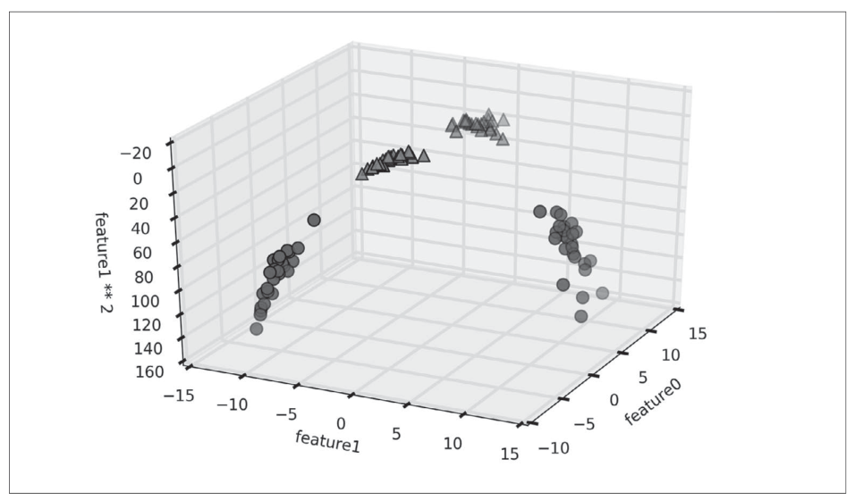
在新表示中，可以用线性模型（三维空间中的平面）把两个类别分开：
# ===== 书 2.3.7 节：三维空间中的线性决策平面 =====
linear_svm_3d = LinearSVC().fit(X_new, y)
coef, intercept = linear_svm_3d.coef_.ravel(), linear_svm_3d.intercept_
# 显示线性决策边界
figure = plt.figure()
ax = Axes3D(figure, elev=-152, azim=-26)
xx = np.linspace(X_new[:, 0].min() - 2, X_new[:, 0].max() + 2, 50)
yy = np.linspace(X_new[:, 1].min() - 2, X_new[:, 1].max() + 2, 50)
XX, YY = np.meshgrid(xx, yy)
ZZ = (coef[0] * XX + coef[1] * YY + intercept) / -coef[2]
ax.plot_surface(XX, YY, ZZ, rstride=8, cstride=8, alpha=0.3)
ax.scatter(X_new[mask, 0], X_new[mask, 1], X_new[mask, 2], c='b',
cmap=mglearn.cm2, s=60)
ax.scatter(X_new[~mask, 0], X_new[~mask, 1], X_new[~mask, 2], c='r', marker='^',
cmap=mglearn.cm2, s=60)
ax.set_xlabel("feature0")
ax.set_ylabel("feature1")
ax.set_zlabel("feature1 ** 2")
把线性 SVM 模型看作原始特征的函数，它实际上已经不是线性的了——不是一条直线，而更像一个椭圆：
# ===== 书 2.3.7 节：把三维边界投回二维 =====
ZZ = YY ** 2
dec = linear_svm_3d.decision_function(np.c_[XX.ravel(), YY.ravel(), ZZ.ravel()])
plt.contourf(XX, YY, dec.reshape(XX.shape), levels=[dec.min(), 0, dec.max()],
cmap=mglearn.cm2, alpha=0.5)
mglearn.discrete_scatter(X[:, 0], X[:, 1], y)
plt.xlabel("Feature 0")
plt.ylabel("Feature 1")
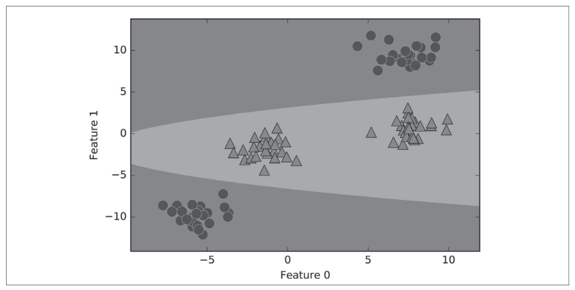
2. 核技巧#
要记住的是：向数据表示中添加非线性特征可以让线性模型更强大。但通常我们并不知道该添加哪些特征，而且添加许多特征（比如 100 维特征空间所有可能的交互项）计算开销可能很大。幸运的是有一种巧妙的数学技巧，让我们在更高维空间中学习分类器，而不用实际计算可能非常大的新数据表示——这就是核技巧（kernel trick）：直接计算扩展特征表示中数据点之间的距离（更准确地说是内积），而不用实际对扩展进行计算。
对 SVM，把数据映射到更高维空间有两种常用方法：
- 多项式核（polynomial kernel）：在一定阶数内计算原始特征所有可能的多项式（比如 feature1 ** 2 * feature2 ** 5）；
- 径向基函数（radial basis function，RBF）核，也叫高斯核：有点难以解释，因为它对应无限维的特征空间。一种解释是它考虑所有阶数的所有可能多项式，但阶数越高，特征的重要性越小（数学上遵循指数映射的泰勒展开）。
实践中，核 SVM 的数学细节并不重要，用 RBF 核 SVM 预测的方法可以简单总结出来——见下一节。
3. 理解 SVM#
训练过程中，SVM 学习每个训练数据点对于表示两个类别之间决策边界的重要性。通常只有一部分训练点对定义决策边界重要：位于类别之间边界上的那些点，叫作支持向量（support vector）——支持向量机正由此得名。
对新样本点预测，需要测量它与每个支持向量之间的距离；分类决策基于这个距离和训练过程中学到的支持向量重要性（保存在 SVC 的 dual_coef_ 属性中）。数据点之间的距离由高斯核给出：
这里 \(x_1\)、\(x_2\) 是数据点，\(\|x_1 - x_2\|\) 表示欧氏距离，\(\gamma\)（gamma）是控制高斯核宽度的参数。
# ===== 书 2.3.7 节：RBF 核 SVM 的决策边界与支持向量 =====
from sklearn.svm import SVC
X, y = mglearn.tools.make_handcrafted_dataset()
svm = SVC(kernel='rbf', C=10, gamma=0.1).fit(X, y)
mglearn.plots.plot_2d_separator(svm, X, eps=.5)
mglearn.discrete_scatter(X[:, 0], X[:, 1], y)
# 画出支持向量
sv = svm.support_vectors_
# 支持向量的类别标签由 dual_coef_ 的正负号给出
sv_labels = svm.dual_coef_.ravel() > 0
mglearn.discrete_scatter(sv[:, 0], sv[:, 1], sv_labels, s=15, markeredgewidth=3)
plt.xlabel("Feature 0")
plt.ylabel("Feature 1")
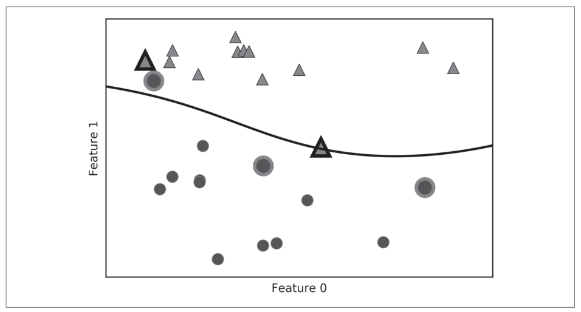
SVM 给出了非常平滑且非线性（不是直线）的边界。这里调节了两个参数：C 和 gamma。
4. SVM 调参#
gamma 是上一节公式里的参数，控制高斯核的宽度——决定"点与点之间靠近"是指多大的距离。C 是正则化参数，与线性模型中的类似——限制每个点的重要性（更确切地说，每个点的 dual_coef_）：
# ===== 书 2.3.7 节：C 与 gamma 的 3x3 网格 =====
fig, axes = plt.subplots(3, 3, figsize=(15, 10))
for ax, C in zip(axes, [-1, 0, 3]):
for a, gamma in zip(ax, range(-1, 2)):
mglearn.plots.plot_svm(log_C=C, log_gamma=gamma, ax=a)
axes[0, 0].legend(["class 0", "class 1", "sv class 0", "sv class 1"],
ncol=4, loc=(.9, 1.2))
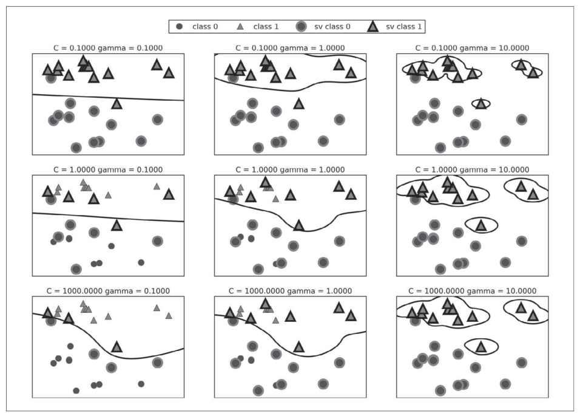
从左到右 gamma 从 0.1 增加到 10：gamma 较小说明高斯核半径较大，许多点都被看作比较靠近，决策边界非常平滑；越向右越关注单个点。小的 gamma 值表示决策边界变化很慢，生成复杂度较低的模型；大的 gamma 生成更复杂的模型。
从上到下 C 从 0.1 增加到 1000：C 很小时模型非常受限，每个数据点的影响范围有限——左上角的决策边界几乎是线性的，误分类的点对边界几乎没有任何影响；增大 C 后这些点的影响变大，决策边界发生弯曲来把它们正确分类。
把 RBF 核 SVM 用到乳腺癌数据集上。默认 C=1，gamma=1/n_features：
# ===== 书 2.3.7 节：未缩放数据上的 SVC =====
X_train, X_test, y_train, y_test = train_test_split(
cancer.data, cancer.target, random_state=0)
svc = SVC()
svc.fit(X_train, y_train)
print("Accuracy on training set: {:.2f}".format(svc.score(X_train, y_train)))
print("Accuracy on test set: {:.2f}".format(svc.score(X_test, y_test)))
版本差异：SVC 的默认 gamma 已改为 'scale'
原书（scikit-learn 0.19）SVC 默认 gamma=1/n_features（即 'auto'）。scikit-learn 0.22 起默认改为 gamma='scale'，即 \(1 / (n\_features \cdot X.var())\)。因此在 sklearn 1.x 下直接跑上面这段代码，结果与书印的 0.63 不同（通常好不少）。想复现书中的"未缩放灾难"，显式传 SVC(gamma='auto')。
模型训练集分数十分完美，测试集精度只有 63%——相当严重的过拟合。SVM 对参数设定和数据缩放都非常敏感：要求所有特征有相似的变化范围。看每个特征的最小值和最大值（对数坐标）：
# ===== 书 2.3.7 节：乳腺癌数据集的特征范围 =====
plt.plot(X_train.min(axis=0), 'o', label="min")
plt.plot(X_train.max(axis=0), '^', label="max")
plt.legend(loc=4)
plt.xlabel("Feature index")
plt.ylabel("Feature magnitude")
plt.yscale("log")
图 2-43（y 轴为对数坐标）显示乳腺癌数据集的特征具有完全不同的数量级——对线性模型可能是小问题，对核 SVM 有极大影响。
5. 为 SVM 预处理数据#
解决方法是对每个特征缩放，使其大致位于同一范围。核 SVM 常用的缩放方法是把所有特征缩放到 0 和 1 之间（第 3 章会用 MinMaxScaler 自动完成，这里"人工"做）：
# ===== 书 2.3.7 节：人工 MinMax 缩放 =====
# 计算训练集中每个特征的最小值
min_on_training = X_train.min(axis=0)
# 计算训练集中每个特征的范围（最大值-最小值）
range_on_training = (X_train - min_on_training).max(axis=0)
# 减去最小值，然后除以范围：每个特征都是 min=0、max=1
X_train_scaled = (X_train - min_on_training) / range_on_training
# 利用训练集的最小值和范围对测试集做相同的变换（详见第 3 章）
X_test_scaled = (X_test - min_on_training) / range_on_training
svc = SVC()
svc.fit(X_train_scaled, y_train)
print("缩放后: train {:.3f} / test {:.3f}".format(
svc.score(X_train_scaled, y_train), svc.score(X_test_scaled, y_test)))
svc = SVC(C=1000)
svc.fit(X_train_scaled, y_train)
print("C=1000: train {:.3f} / test {:.3f}".format(
svc.score(X_train_scaled, y_train), svc.score(X_test_scaled, y_test)))
数据缩放的作用很大！模型现在处于欠拟合状态（训练集与测试集性能非常接近，但没接近 100%），从这里开始可以尝试增大 C 或 gamma 拟合更复杂的模型——增大 C 显著改进模型，得到 97.2% 的精度。注意测试集的变换用的是训练集统计出的 min 和 range（第 3 章会正式讲为什么不能反过来）。
6. 优点、缺点和参数#
核 SVM 是非常强大的模型，在各种数据集上都表现很好：允许决策边界很复杂，即使数据只有几个特征；低维数据和高维数据上都表现好。缺点是对样本个数的缩放表现不好——多达 10 000 个样本的数据可能运行良好，但 100 000 甚至更大时运行时间和内存使用面临挑战；预处理数据和调参都需要非常小心（这也是如今很多应用改用随机森林或梯度提升的原因——它们需要很少甚至不需要预处理）；SVM 模型很难检查，可能难以理解为什么会这么预测，也难以向非专家解释。
不过 SVM 仍然值得尝试，特别是所有特征的测量单位相似（比如都是像素密度）且范围差不多时。
核 SVM 的重要参数：正则化参数 C、核的选择以及与核相关的参数。RBF 核只有一个参数 gamma，是高斯核宽度的倒数。gamma 和 C 控制的都是模型复杂度，较大的值都对应更复杂的模型，因此两个参数的设定通常强烈相关，应该同时调节。
2.3.8 神经网络（深度学习）#
一类被称为神经网络（neural network） 的算法最近以"深度学习"的名字再度流行。深度学习算法往往经过精确调整，只适用于特定的使用场景；本节讨论相对简单的方法——用于分类和回归的多层感知机（multilayer perceptron，MLP），它可以作为研究更复杂的深度学习方法的起点。MLP 也被称为（普通）前馈神经网络（feed-forward neural network），有时简称神经网络。
1. 神经网络模型#
MLP 可以被视为广义的线性模型，执行多层处理后得到结论。回忆线性回归的预测公式：
\(\hat{y}\) 是输入特征的加权求和，权重是学到的系数。把这个公式可视化：左边每个结点代表一个输入特征，连线代表学到的系数，右边结点代表输出：
在 MLP 中，多次重复这个计算加权求和的过程：先计算代表中间过程的隐单元（hidden unit），再计算这些隐单元的加权求和得到最终结果：
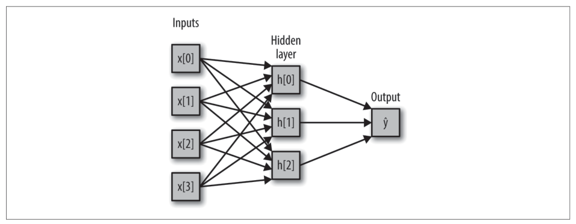
从数学角度看，计算一系列加权求和与只计算一个加权求和是完全相同的——为了让这个模型真正比线性模型强大，还需要一个技巧：在计算完每个隐单元的加权求和之后，对结果再应用一个非线性函数——通常是校正非线性（rectifying nonlinearity），也叫校正线性单元（relu），或正切双曲线（tangens hyperbolicus，tanh）。relu 截断小于 0 的值；tanh 在输入较小时接近 −1，较大时接近 +1。有了这两种非线性函数，神经网络可以学习比线性模型复杂得多的函数：
# ===== 书 2.3.8 节：tanh 与 relu 激活函数 =====
line = np.linspace(-3, 3, 100)
plt.plot(line, np.tanh(line), label="tanh")
plt.plot(line, np.maximum(line, 0), label="relu")
plt.legend(loc="best")
plt.xlabel("x")
plt.ylabel("relu(x), tanh(x)")
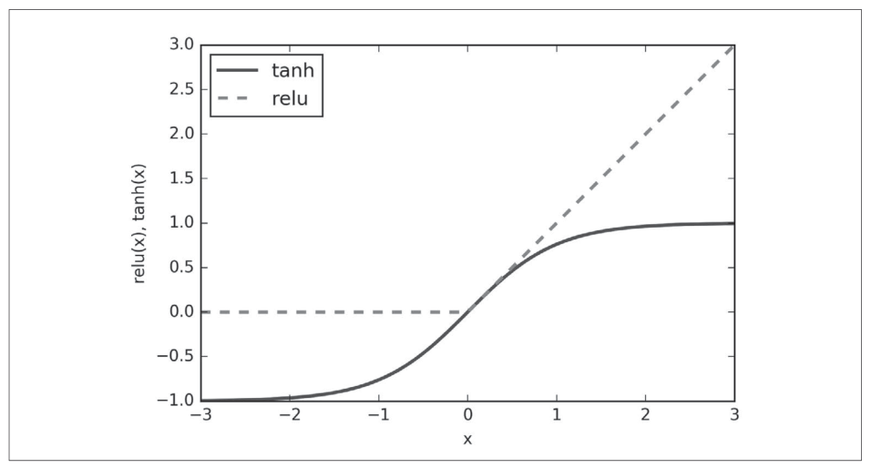
对图 2-45 的小型神经网络（4 个输入特征、3 个隐单元），使用 tanh 非线性时计算 \(\hat{y}\) 的完整公式：
其中 \(w\) 是输入 \(x\) 与隐层 \(h\) 之间的权重，\(v\) 是隐层与输出之间的权重，都要从数据中学习得到。
原书笔误（公式排版）：h[0]~h[2] 的权重下标
原书把三条隐单元公式里的权重都印成了 w[0,0] × x[0] + w[1,0] × x[1] + …，三条公式看起来一模一样。按"每条公式对应一个隐单元"的语义，第二条的系数应为 w[·,1]、第三条应为 w[·,2]（即 w 的第二个下标对应隐单元编号）。这是排版缩写造成的笔误，不是模型含义有变。
需要用户设置的一个重要参数是隐层中的结点个数：对非常小或非常简单的数据集可以小到 10；对非常复杂的数据可以大到 10 000。也可以添加多个隐层——许多计算层组成的大型神经网络正是"深度学习"术语的灵感来源：
2. 神经网络调参#
把 MLPClassifier 应用到 two_moons 数据集上，研究 MLP 的工作原理：
# ===== 书 2.3.8 节：100 个隐单元的 MLP =====
from sklearn.neural_network import MLPClassifier
from sklearn.datasets import make_moons
X, y = make_moons(n_samples=100, noise=0.25, random_state=3)
X_train, X_test, y_train, y_test = train_test_split(X, y, stratify=y,
random_state=42)
mlp = MLPClassifier(solver='lbfgs', random_state=0).fit(X_train, y_train)
mglearn.plots.plot_2d_separator(mlp, X_train, fill=True, alpha=.3)
mglearn.discrete_scatter(X_train[:, 0], X_train[:, 1], y_train)
plt.xlabel("Feature 0")
plt.ylabel("Feature 1")
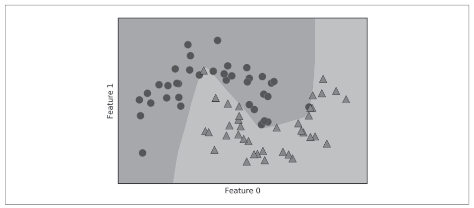
神经网络学到的决策边界完全是非线性，但相对平滑（这里用了 solver='lbfgs'，稍后解释）。默认 MLP 使用 100 个隐结点，对这个小型数据集已经相当多。减少到 10 个（降低模型复杂度）仍能得到不错的结果——只有 10 个隐单元时，决策边界更加参差不齐。默认非线性是 relu；单隐层时决策函数由 10 个直线段组成。想得到更平滑的边界可以：添加更多隐单元、添加第二个隐层、或使用 tanh 非线性：
# ===== 书 2.3.8 节：10 个隐单元 / 2 个隐层 / tanh =====
mlp = MLPClassifier(solver='lbfgs', random_state=0, hidden_layer_sizes=[10])
mlp.fit(X_train, y_train)
# 使用 2 个隐层，每个包含 10 个单元
mlp = MLPClassifier(solver='lbfgs', random_state=0,
hidden_layer_sizes=[10, 10])
mlp.fit(X_train, y_train)
# 使用 2 个隐层，每个包含 10 个单元，这次使用 tanh 非线性
mlp = MLPClassifier(solver='lbfgs', activation='tanh',
random_state=0, hidden_layer_sizes=[10, 10])
mlp.fit(X_train, y_train)
还可以利用 L2 惩罚使权重趋向于 0 来控制神经网络的复杂度，正如岭回归和线性分类器那样。MLPClassifier 中调节 L2 惩罚的参数是 alpha（与线性回归模型中的相同），默认值很小（弱正则化）：
# ===== 书 2.3.8 节：隐单元个数与 alpha 的组合网格 =====
fig, axes = plt.subplots(2, 4, figsize=(20, 8))
for axx, n_hidden_nodes in zip(axes, [10, 100]):
for ax, alpha in zip(axx, [0.0001, 0.01, 0.1, 1]):
mlp = MLPClassifier(solver='lbfgs', random_state=0,
hidden_layer_sizes=[n_hidden_nodes, n_hidden_nodes],
alpha=alpha)
mlp.fit(X_train, y_train)
mglearn.plots.plot_2d_separator(mlp, X_train, fill=True, alpha=.3, ax=ax)
mglearn.discrete_scatter(X_train[:, 0], X_train[:, 1], y_train, ax=ax)
ax.set_title("n_hidden=[{}, {}]\nalpha={:.4f}".format(
n_hidden_nodes, n_hidden_nodes, alpha))
控制神经网络复杂度的方法有很多：隐层的个数、每个隐层中的单元个数与正则化（alpha）——实际上还有更多。神经网络的另一个重要性质：开始学习之前权重是随机设置的，这种随机初始化会影响学到的模型。即使参数完全相同，随机种子不同也可能得到非常不一样的模型。网络很大且复杂度选择合理时影响不大，但对较小的网络要记住这一点：
# ===== 书 2.3.8 节：相同参数、不同随机初始化 =====
fig, axes = plt.subplots(2, 4, figsize=(20, 8))
for i, ax in enumerate(axes.ravel()):
mlp = MLPClassifier(solver='lbfgs', random_state=i,
hidden_layer_sizes=[100, 100])
mlp.fit(X_train, y_train)
mglearn.plots.plot_2d_separator(mlp, X_train, fill=True, alpha=.3, ax=ax)
mglearn.discrete_scatter(X_train[:, 0], X_train[:, 1], y_train, ax=ax)
再到现实世界的乳腺癌数据集上。先看特征的取值范围（cancer.data.max(axis=0) 显示各特征最大值从 0.097 一路跨到 4254.000，相差多个数量级），然后用默认参数训练：
# ===== 书 2.3.8 节：未缩放数据上的 MLP =====
X_train, X_test, y_train, y_test = train_test_split(
cancer.data, cancer.target, random_state=0)
mlp = MLPClassifier(random_state=42)
mlp.fit(X_train, y_train)
print("Accuracy on training set: {:.2f}".format(mlp.score(X_train, y_train)))
print("Accuracy on test set: {:.2f}".format(mlp.score(X_test, y_test)))
MLP 的精度相当好，但没有其他模型好。与 SVC 的例子相同，原因可能在数据的缩放——神经网络也要求所有输入特征的变化范围相似，最理想的是均值为 0、方差为 1（第 3 章会用 StandardScaler 自动完成，这里人工做）：
# ===== 书 2.3.8 节：人工标准化后再训练 MLP =====
# 计算训练集中每个特征的平均值
mean_on_train = X_train.mean(axis=0)
# 计算训练集中每个特征的标准差
std_on_train = X_train.std(axis=0)
# 减去平均值，然后乘以标准差的倒数：mean=0，std=1
X_train_scaled = (X_train - mean_on_train) / std_on_train
# 对测试集做相同的变换（使用训练集的平均值和标准差）
X_test_scaled = (X_test - mean_on_train) / std_on_train
mlp = MLPClassifier(random_state=0)
mlp.fit(X_train_scaled, y_train)
print("Accuracy on training set: {:.3f}".format(
mlp.score(X_train_scaled, y_train)))
print("Accuracy on test set: {:.3f}".format(mlp.score(X_test_scaled, y_test)))
Accuracy on training set: 0.991
Accuracy on test set: 0.965
ConvergenceWarning:
Stochastic Optimizer: Maximum iterations reached and the optimization
hasn't converged yet.
缩放之后结果好得多，也相当有竞争力。不过模型给出了警告：已达最大迭代次数（这是学习模型的 adam 算法的一部分），应该增加迭代次数：
# ===== 书 2.3.8 节：增大 max_iter 与 alpha =====
mlp = MLPClassifier(max_iter=1000, random_state=0)
mlp.fit(X_train_scaled, y_train)
print("max_iter=1000: train {:.3f} / test {:.3f}".format(
mlp.score(X_train_scaled, y_train), mlp.score(X_test_scaled, y_test)))
mlp = MLPClassifier(max_iter=1000, alpha=1, random_state=0)
mlp.fit(X_train_scaled, y_train)
print("alpha=1: train {:.3f} / test {:.3f}".format(
mlp.score(X_train_scaled, y_train), mlp.score(X_test_scaled, y_test)))
增加迭代次数仅提高了训练集性能，没提高泛化性能。由于训练与测试性能之间仍有差距，可以尝试降低模型复杂度：增大 alpha（这里从 0.0001 加到 1，范围相当大）向权重添加更强的正则化——得到了目前最好的模型之一（0.972）。
原书脚注：为什么好几个模型都是 0.972
许多表现很好的模型得到完全相同的精度 0.972，说明它们犯错的数量完全相同（4 个）——对比实际预测结果，甚至发现错的地方都一样。这可能是因为数据集非常小，或者这些点与其他点的确不同。
分析神经网络学到了什么通常比线性模型或树模型更复杂。一种方法是查看模型的权重。对乳腺癌数据集画出连接输入和第一个隐层之间的权重：行对应 30 个输入特征，列对应 100 个隐单元，浅色代表较大的正值，深色代表负值：
# ===== 书 2.3.8 节：第一个隐层权重的热图 =====
plt.figure(figsize=(20, 5))
plt.imshow(mlp.coefs_[0], interpolation='none', cmap='viridis')
plt.yticks(range(30), cancer.feature_names)
plt.xlabel("Columns in weight matrix")
plt.ylabel("Input feature")
plt.colorbar()
如果某个特征对所有隐单元的权重都很小，这个特征对模型就"不太重要"。图中可以看到 mean smoothness、mean compactness 以及 smoothness error 和 fractal dimension error 之间的特征权重相对较小——可能说明这些特征不重要，也可能是我们没有用神经网络可以使用的方式来表示这些特征。连接隐层和输出层的权重也可以可视化，但更难解释。
虽然 MLPClassifier 和 MLPRegressor 为最常见的神经网络架构提供了易用的接口，但只包含神经网络潜在应用的一部分。想用更灵活或更大的模型，可以看 scikit-learn 之外的深度学习库：Python 用户中最完善的是 keras、lasagne 和 tensorflow（lasagne 基于 theano 构建，keras 既可以用 tensorflow 也可以用 theano）。这些库接口更灵活，能跟上深度学习研究的快速发展；所有流行的深度学习库也都支持 GPU，而 scikit-learn 不支持——GPU 可以把计算速度加快 10 到 100 倍，对把深度学习用于大型数据集至关重要。
原书笔误（库名拼写）
中译本把深度学习库名印作"lasagna"和"tensor-flow"，正确写法是 lasagne 和 TensorFlow（theano 亦已停止维护）。如今事实上的标配是 TensorFlow/Keras 或 PyTorch，scikit-learn 的 MLP 只适合中小规模表格数据。
3. 优点、缺点和参数#
神经网络在许多机器学习应用中再次成为最先进的模型。优点：能够获取大量数据中包含的信息并构建无比复杂的模型——给定足够的计算时间和数据，并且仔细调参，神经网络通常可以打败其他机器学习算法（分类和回归都是）。缺点：功能强大的大型神经网络通常需要很长的训练时间；需要仔细预处理数据；与 SVM 类似，在"均匀"数据上性能最好（所有特征具有相似的含义）——数据包含不同种类的特征时，基于树的模型可能更好；调参本身是一门艺术。
估计神经网络的复杂度。最重要的参数是层数和每层的隐单元个数。建议先设 1 或 2 个隐层，逐步增加；每个隐层的结点个数通常与输入特征个数接近，但很少在几千个结点时多于特征个数。一个有用的复杂度度量是学到的权重（系数）个数：
- 100 个特征的二分类数据集 + 100 个隐单元：输入层到隐层 100×100=10 000 个权重，隐层到输出 100×1=100 个，共约 10 100 个；
- 加第二个 100 隐单元的隐层：再加 100×100=10 000，共约 20 100 个；
- 单隐层 1000 隐单元：100×1000=100 000 + 1000×1=1000，共 101 000 个；
- 再加第二个 1000 隐单元的隐层：再加 1000×1000=1 000 000，总数变为 1 101 000——比两层各 100 的模型大 50 倍。
神经网络调参的常用方法：先创建一个大到足以过拟合的网络，确保它能对任务进行学习；知道训练数据可以被学习之后，要么缩小网络，要么增大 alpha 增强正则化，以提高泛化性能。
模型定义的参数：层数、每层结点个数、正则化和非线性。学习模型的算法由 solver 参数设定，有两个好用的选项：
- 'adam'（默认）：大多数情况下效果都很好，但对数据缩放相当敏感（始终把数据缩放为均值 0、方差 1 很重要）；
- 'lbfgs'：鲁棒性相当好，但在大型模型或大型数据集上时间较长；
- 更高级的 'sgd'：许多深度学习研究人员使用，还有许多其他参数需要调节才能获得最佳结果。
开始使用 MLP 时，建议使用 'adam' 和 'lbfgs'。
版本差异：MLPClassifier 的默认行为
默认结构至今仍是单隐层 100 个隐单元（hidden_layer_sizes=(100,)）、激活 relu、alpha=0.0001、solver='adam'、max_iter=200，与书一致。但要注意：书印输出基于 scikit-learn 0.19，adam 优化在不同版本/平台上收敛路径不同，复现的精度可能有小幅出入（例如书中未缩放数据上的 0.92/0.90）；遇到 ConvergenceWarning 的处理方式不变——增大 max_iter。小数据集上推荐像书中那样用 solver='lbfgs'，快且稳。
侧栏：fit 会重置模型 scikit-learn 模型的一个重要性质：调用
fit总会重置模型之前学到的所有内容。在一个数据集上构建模型后，再在另一个数据集上调用fit，模型会"忘记"从第一个数据集学到的一切。可以对一个模型多次调用fit，结果与在"新"模型上调用完全相同。
2.4 分类器的不确定度估计#
scikit-learn 接口还有一个有用之处：分类器能够给出预测的不确定度估计。我们感兴趣的不仅是分类器预测测试点属于哪个类别，还有它对这个预测的置信程度。在实践中，不同类型的错误会导致非常不同的结果：想象一个用于测试癌症的医疗应用——假阳性预测可能只是让患者接受额外的测试，假阴性预测却可能导致重病没有得到治疗（第 5 章进一步探讨这一主题）。
scikit-learn 有两个函数可获取分类器的不确定度估计：decision_function 和 predict_proba。大多数分类器（但不是全部）至少有其中一个，很多两个都有。构建一个 GradientBoostingClassifier（两个方法都有），看它们对一个模拟二维数据集的作用：
# ===== 书 2.4 节：构造带字符串类别名的二分类任务 =====
from sklearn.ensemble import GradientBoostingClassifier
from sklearn.datasets import make_circles
X, y = make_circles(noise=0.25, factor=0.5, random_state=1)
# 为了便于说明，我们将两个类别重命名为 "blue" 和 "red"
y_named = np.array(["blue", "red"])[y]
# 我们可以对任意个数组调用 train_test_split，所有数组的划分方式都是一致的
X_train, X_test, y_train_named, y_test_named, y_train, y_test = \
train_test_split(X, y_named, y, random_state=0)
# 构建梯度提升模型
gbrt = GradientBoostingClassifier(random_state=0)
gbrt.fit(X_train, y_train_named)
2.4.1 决策函数#
二分类情况下，decision_function 返回值形状是 \((n_{samples},)\)，为每个样本返回一个浮点数：
# ===== 书 2.4.1 节：decision_function 的形状与含义 =====
print("X_test.shape: {}".format(X_test.shape))
print("Decision function shape: {}".format(
gbrt.decision_function(X_test).shape))
# 显示 decision_function 的前几个元素
print("Decision function:\n{}".format(gbrt.decision_function(X_test)[:6]))
X_test.shape: (25, 2)
Decision function shape: (25,)
Decision function:
[ 4.136 -1.683 -3.951 -3.626 4.29 3.662]
这个值表示模型对该数据点属于"正类"的置信程度：正值表示偏好正类，负值表示偏好"反类"（其他类）。只看决策函数的正负号就能再现预测值：
# ===== 书 2.4.1 节：用符号还原 predict，以及 classes_ 的角色 =====
print("Thresholded decision function:\n{}".format(
gbrt.decision_function(X_test) > 0))
print("Predictions:\n{}".format(gbrt.predict(X_test)))
# 将布尔值 True/False 转换成 0 和 1
greater_zero = (gbrt.decision_function(X_test) > 0).astype(int)
# 利用 0 和 1 作为 classes_ 的索引
pred = gbrt.classes_[greater_zero]
print("pred is equal to predictions: {}".format(
np.all(pred == gbrt.predict(X_test))))
decision_function = gbrt.decision_function(X_test)
print("Decision function minimum: {:.2f} maximum: {:.2f}".format(
np.min(decision_function), np.max(decision_function)))
二分类问题中，"反"类始终是 classes_ 属性的第一个元素，"正"类是第二个元素；想完全再现 predict 的输出，就要借助 classes_。decision_function 可以在任意范围取值（本例 −7.69 到 4.29），取决于数据与模型参数——因此它的输出往往很难解释。在二维平面中用颜色编码画出所有点的 decision_function 和决策边界（训练点画成圆，测试点画成三角）：
# ===== 书 2.4.1 节：决策边界（左）与决策函数（右） =====
fig, axes = plt.subplots(1, 2, figsize=(13, 5))
mglearn.tools.plot_2d_separator(gbrt, X, ax=axes[0], alpha=.4,
fill=True, cm=mglearn.cm2)
scores_image = mglearn.tools.plot_2d_scores(gbrt, X, ax=axes[1],
alpha=.4, cm=mglearn.ReBl)
for ax in axes:
# 画出训练点和测试点
mglearn.discrete_scatter(X_test[:, 0], X_test[:, 1], y_test,
markers='^', ax=ax)
mglearn.discrete_scatter(X_train[:, 0], X_train[:, 1], y_train,
markers='o', ax=ax)
ax.set_xlabel("Feature 0")
ax.set_ylabel("Feature 1")
cbar = plt.colorbar(scores_image, ax=axes.tolist())
axes[0].legend(["Test class 0", "Test class 1", "Train class 0",
"Train class 1"], ncol=4, loc=(.1, 1.1))
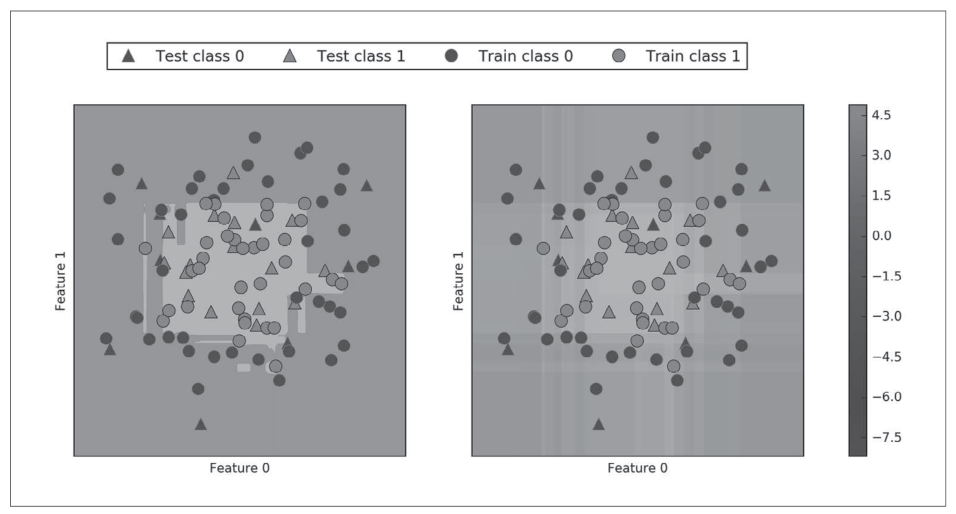
既给出预测结果又给出置信程度，信息量更大；但上面的图像中很难分辨两个类别之间的边界。
2.4.2 预测概率#
predict_proba 的输出是每个类别的概率，通常比 decision_function 的输出更容易理解。二分类问题中它的形状始终是 \((n_{samples}, 2)\)：
# ===== 书 2.4.2 节：predict_proba 的形状与数值 =====
print("Shape of probabilities: {}".format(gbrt.predict_proba(X_test).shape))
# 显示 predict_proba 的前几个元素
print("Predicted probabilities:\n{}".format(
gbrt.predict_proba(X_test[:6])))
Shape of probabilities: (25, 2)
Predicted probabilities:
[[ 0.016 0.984]
[ 0.843 0.157]
[ 0.981 0.019]
[ 0.974 0.026]
[ 0.014 0.986]
[ 0.025 0.975]]
每行第一个元素是第一个类别的估计概率，第二个元素是第二个类别的估计概率。概率总在 0 和 1 之间，两个类别的元素之和始终为 1——只有一个类别的概率超过 50%，这个类别就是模型的预测结果。上例中分类器对大部分点的置信程度都相对较高。
不确定度大小实际反映模型和参数的不确定度：过拟合更强的模型可能做出置信程度更高的预测（即使可能是错的）；复杂度越低的模型通常不确定度越大。如果模型给出的不确定度符合实际情况，它被称为**校正（calibrated）**模型——在校正模型中，预测有 70% 的确定度，它就在 70% 的情况下正确。再画出决策边界与类别 1 的类别概率：
# ===== 书 2.4.2 节：决策边界（左）与预测概率（右） =====
fig, axes = plt.subplots(1, 2, figsize=(13, 5))
mglearn.tools.plot_2d_separator(
gbrt, X, ax=axes[0], alpha=.4, fill=True, cm=mglearn.cm2)
scores_image = mglearn.tools.plot_2d_scores(
gbrt, X, ax=axes[1], alpha=.5, cm=mglearn.ReBl, function='predict_proba')
for ax in axes:
mglearn.discrete_scatter(X_test[:, 0], X_test[:, 1], y_test,
markers='^', ax=ax)
mglearn.discrete_scatter(X_train[:, 0], X_train[:, 1], y_train,
markers='o', ax=ax)
ax.set_xlabel("Feature 0")
ax.set_ylabel("Feature 1")
cbar = plt.colorbar(scores_image, ax=axes.tolist())
axes[0].legend(["Test class 0", "Test class 1", "Train class 0",
"Train class 1"], ncol=4, loc=(.1, 1.1))
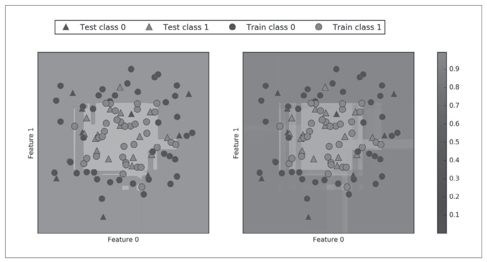
scikit-learn 网站给出了许多模型的对比以及不确定度估计的形状，下图复制了这一结果，建议去网站查看完整示例：
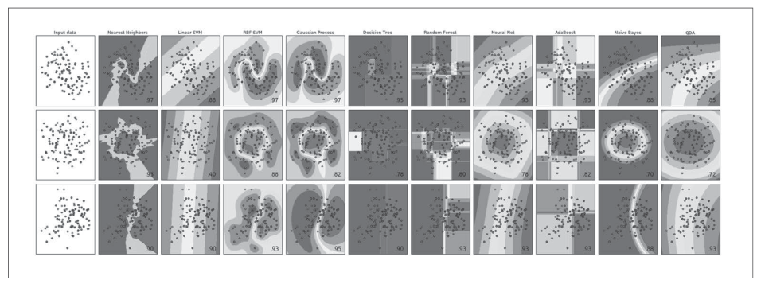
拓展：decision_function 与 predict_proba 的换算
二分类时两者只差一次 sigmoid 变换：\(p = \sigma(f) = \dfrac{1}{1 + e^{-f}}\)。把图 2-55 右图的分数 −7.69 到 4.29 代入，就得到图 2-56 右图 0 到 1 之间的概率。多分类时对应的是 softmax：\(p_k = e^{f_k} / \sum_j e^{f_j}\)。这也解释了为什么 decision_function 的"任意范围"并不可怕——它只是没有归一化的置信分数。但注意：梯度提升这类模型的概率不一定校正，"0.9 的置信"未必对应 90% 的正确率，第 5 章会再谈校正方法。
2.4.3 多分类问题的不确定度#
decision_function 和 predict_proba 也适用于多分类。对鸢尾花（Iris）三分类数据集应用：
# ===== 书 2.4.3 节：多分类的 decision_function =====
from sklearn.datasets import load_iris
iris = load_iris()
X_train, X_test, y_train, y_test = train_test_split(
iris.data, iris.target, random_state=42)
gbrt = GradientBoostingClassifier(learning_rate=0.01, random_state=0)
gbrt.fit(X_train, y_train)
print("Decision function shape: {}".format(gbrt.decision_function(X_test).shape))
print("Decision function:\n{}".format(gbrt.decision_function(X_test)[:6, :]))
Decision function shape: (38, 3)
Decision function:
[[-0.529 1.466 -0.504]
[ 1.512 -0.496 -0.503]
[-0.524 -0.468 1.52 ]
[-0.529 1.466 -0.504]
[-0.531 1.282 0.215]
[ 1.512 -0.496 -0.503]]
多分类时 decision_function 形状为 \((n_{samples}, n_{classes})\)，每一列对应每个类别的"确定度分数"：分数较高的类别可能性更大。找出每个数据点的最大元素即可再现预测结果：
# ===== 书 2.4.3 节：用 argmax 还原多分类预测 =====
print("Argmax of decision function:\n{}".format(
np.argmax(gbrt.decision_function(X_test), axis=1)))
print("Predictions:\n{}".format(gbrt.predict(X_test)))
# predict_proba 形状相同，每行概率之和为 1
print("Predicted probabilities:\n{}".format(gbrt.predict_proba(X_test)[:6]))
print("Sums: {}".format(gbrt.predict_proba(X_test)[:6].sum(axis=1)))
Argmax of decision function:
[1 0 2 1 1 0 1 2 1 1 2 0 0 0 0 1 2 1 1 2 0 2 0 2 2 2 2 2 0 0 0 0 1 0 0 2 1 0]
Predictions:
[1 0 2 1 1 0 1 2 1 1 2 0 0 0 0 1 2 1 1 2 0 2 0 2 2 2 2 2 0 0 0 0 1 0 0 2 1 0]
Sums: [ 1. 1. 1. 1. 1. 1.]
predict_proba 输出的形状相同，也是 \((n_{samples}, n_{classes})\)，每个数据点所有类别的概率之和为 1，同样可以用 argmax 还原预测。
总结：predict_proba 和 decision_function 的形状始终相同，都是 \((n_{samples}, n_{classes})\)——除了二分类特殊情况下的 decision_function（只有一列，对应"正"类 classes_[1]，这主要是历史原因）。如果有 n_classes 列，可以通过每一列的 argmax 再现预测。但如果类别是字符串，或不是从 0 开始的连续整数，一定要小心——对比 predict 与 decision_function/predict_proba 的结果时，要用分类器的 classes_ 属性来获取真实的类别名称：
# ===== 书 2.4.3 节：字符串类别名时用 classes_ 对齐 =====
logreg = LogisticRegression()
# 用 Iris 数据集的类别名称来表示每一个目标值
named_target = iris.target_names[y_train]
logreg.fit(X_train, named_target)
print("unique classes in training data: {}".format(logreg.classes_))
print("predictions: {}".format(logreg.predict(X_test)[:10]))
argmax_dec_func = np.argmax(logreg.decision_function(X_test), axis=1)
print("argmax of decision function: {}".format(argmax_dec_func[:10]))
print("argmax combined with classes_: {}".format(
logreg.classes_[argmax_dec_func][:10]))
unique classes in training data: ['setosa' 'versicolor' 'virginica']
predictions: ['versicolor' 'setosa' 'virginica' 'versicolor' 'versicolor'
'setosa' 'versicolor' 'virginica' 'versicolor' 'versicolor']
argmax of decision function: [1 0 2 1 1 0 1 2 1 1]
argmax combined with classes_: ['versicolor' 'setosa' 'virginica' 'versicolor'
'versicolor' 'setosa' 'versicolor' 'virginica' 'versicolor' 'versicolor']
2.5 小结与展望#
本章先讨论了模型复杂度与泛化（学习一个能在前所未见的新数据上表现良好的模型），由此引出欠拟合（模型无法获取训练数据中的所有变化）和过拟合（模型过分关注训练数据、对新数据泛化不好）。然后讨论了一系列用于分类和回归的模型、各自的优缺点以及如何控制复杂度。对许多算法而言，设置正确的参数对模型性能至关重要；有些算法还对输入数据的表示方式很敏感（特别是特征缩放）。盲目把算法套在数据集上、不理解模型的假设和参数含义，不太可能得到精度高的模型。
本章包含大量算法信息，继续阅读前不必记住所有细节，但"何时使用哪种模型"值得快速回顾：
| 模型 | 一句话定位 |
|---|---|
| 最近邻 | 适用于小型数据集，是很好的基准模型，很容易解释 |
| 线性模型 | 非常可靠的首选算法，适用于非常大的数据集，也适用于高维数据 |
| 朴素贝叶斯 | 只适用于分类。比线性模型还快，适用于非常大的数据集和高维数据，精度通常低于线性模型 |
| 决策树 | 速度很快，不需要数据缩放，可以可视化，很容易解释 |
| 随机森林 | 几乎总是比单棵决策树好，鲁棒性很好、非常强大，不需要数据缩放；不适用于高维稀疏数据 |
| 梯度提升决策树 | 精度通常比随机森林略高；训练更慢但预测更快、内存更省；比随机森林需要更多调参 |
| 支持向量机 | 对特征含义相似的中等大小数据集很强大；需要数据缩放，对参数敏感 |
| 神经网络 | 可以构建非常复杂的模型（特别是大型数据集）；对数据缩放敏感、对参数选取敏感，大型网络训练时间长 |
面对新数据集，通常最好先从简单模型开始（线性模型、朴素贝叶斯或最近邻分类器），看能得到什么结果；对数据有了进一步了解后，再考虑更复杂的模型（随机森林、梯度提升决策树、SVM 或神经网络）。
现在你应该对如何应用、调节和分析这些模型有了初步了解。本章主要介绍二分类（最容易理解），但大多数算法都同时支持分类和回归，所有分类算法都能用于二分类和多分类。可以尝试把算法应用到 scikit-learn 的内置数据集上（回归的 boston_housing、diabetes，多分类的 digits），感受它们的训练时间、分析难易和对数据表示的敏感程度。在生产环境中构建泛化性能好的模型还要更复杂——正确调参和自动寻找最佳参数的方法在后面（交叉验证与网格搜索、Pipeline，见第 5、6 章）介绍。不过首先，下一章将深入讨论无监督学习和预处理。
坑与陷阱#
本章最容易栽的 8 个地方
- 特征没缩放就上 SVM / 神经网络：乳腺癌数据集特征跨 4 个数量级，未缩放的 SVC 训练 1.00、测试只有 0.63；MLP 也从 0.97 掉到 0.90。核 SVM 要求 MinMax 到 [0,1]，神经网络要求标准化到均值 0、方差 1。
- 测试集用自己（或用全量）的统计量缩放：
X_test_scaled必须用训练集的 min/range、mean/std 来变换——用测试集自己的统计量等于把测试信息泄漏进训练，评估结果虚高（第 3、6 章的正题）。 - 把 LogisticRegression 当回归：名字带 regression，实际是分类算法；做回归请用 LinearRegression/Ridge/Lasso。同理 LinearSVC 才是"线性支持向量分类器"。
- 树模型当趋势预测器：DecisionTreeRegressor（以及一切基于树的模型）不能外推——训练范围之外只会平推最后一个已知值（图 2-32 的 RAM 价格惨案）。外推任务用参数化模型。
- n_estimators 的语义在两种集成里相反：随机森林树越多越好（时间内存允许下尽量多）；梯度提升树越多模型越复杂、可能过拟合——应先按预算定树数，再调 learning_rate（通常 ≤5 的 max_depth 配小学习率）。
- kNN 的复杂度方向记反：n_neighbors 越小模型越复杂（1 个邻居边界贴着训练点）、越大越简单；在图 2-1 上表现为水平翻转。调参时别把方向搞反。
- 方法链的丢失陷阱：
y_pred = LogisticRegression().fit(...).predict(...)一行流之后，模型没存在任何变量里，既看不了 coef_ 也没法再预测；多次调用 fit 会重置模型，"接着训练"是不存在的。 - 不确定度当真：
decision_function取值范围任意（不可跨模型比较）；predict_proba的概率来自模型，过拟合模型会给出高置信的错误预测——只有**校正（calibrated）**模型的概率才可信。二分类的 decision_function 只有一列、对应 classes_[1]，字符串类别要靠 classes_ 对齐，别直接拿 argmax 当标签。
速览#
- 分类预测类别标签（二分类/多分类），回归预测连续值；判别方法：输出有没有连续性。
- 泛化 = 对没见过的数据预测准确；过拟合 = 过于复杂、记住了训练集细节；欠拟合 = 过于简单。最佳模型在训练精度与泛化精度的权衡点（图 2-1）。数据变化范围越大、可用的模型越复杂；永远不要低估更多数据的力量。
- kNN：分类投票、回归取平均；n_neighbors 越小模型越复杂；基准好用，但预测慢、怕高维和稀疏数据。
- 线性回归（OLS）无参数、不可控复杂度；Ridge（L2）和 Lasso（L1）用 alpha 控制正则化，L1 顺带做特征选择（系数恰为 0）；实践中一般首选 Ridge，特征多且认为只有少数重要时用 Lasso，ElasticNet 折中。
- LogisticRegression / LinearSVC 用 C 控制正则化（C 大 = 正则化弱 = 模型复杂），默认 L2；penalty 切换 L1；多分类用"一对其余"：每个类别一个二分类器，取分数最高者。
- 朴素贝叶斯（GaussianNB / BernoulliNB / MultinomialNB）：每个特征单独统计，训练快，alpha 平滑；文本和超大稀疏数据集的好基准。
- 决策树：递归找信息量最大的 if/else 测试，边界与坐标轴平行；scikit-learn 只有预剪枝（max_depth / max_leaf_nodes / min_samples_leaf）；好处是可解释、不挑尺度，坏处是常过拟合；特征重要性恒为正、不指示类别方向；回归树不能外推。
- 随机森林：自助采样 + 每结点随机特征子集（max_features），预测取平均/软投票；n_estimators 越大越好，n_jobs=-1 并行；对高维稀疏数据不好。
- 梯度提升：逐棵纠错，learning_rate 控制纠错强度、与 n_estimators 联动；树浅（≤5）；先试随机森林，再精调梯度提升；大规模可看 xgboost。
- 核 SVM：核技巧免算高维特征；RBF 核 \(k=\exp(-\gamma\|x_1-x_2\|^2)\)；gamma 小 = 模型简单、C 小 = 模型简单，两者要同时调；对样本数缩放差、必须缩放特征。神经网络 MLP：隐层数/单元数/alpha/solver 四个旋钮；必须标准化输入；adam（默认）或 lbfgs（小数据）。不确定度：decision_function（带符号分数）与 predict_proba（概率、行和为 1），校正模型的置信度才可信。
术语速查#
| 英文 / 符号 | 中文 | 一句话 |
|---|---|---|
| generalization | 泛化 | 模型对没见过的数据做出准确预测的能力 |
| overfitting / underfitting | 过拟合 / 欠拟合 | 过于复杂记住训练集细节 / 过于简单抓不住数据变化 |
| k-nearest neighbors (kNN) | k 近邻 | 用最近的 k 个训练点投票（分类）或取平均（回归），n_neighbors 越小模型越复杂 |
| R² (coefficient of determination) | 决定系数 | 回归优度：1 完美，0 等于闭眼猜均值，可为负 |
| regularization | 正则化 | 对模型做显式约束以避免过拟合 |
| L2 / L1 regularization | L2 / L1 正则化 | 惩罚系数平方和（Ridge）/ 绝对值之和（Lasso，可把系数压成 0） |
| alpha / C | 正则化拨码 | alpha 大 = 模型简单；C 大 = 模型复杂（回归叫 alpha，分类叫 C） |
| one-vs.-rest | 一对其余 | 每个类别学一个二分类器，测试点取置信分数最高者 |
| decision function | 决策函数 | 带符号的置信分数，二分类只有一列（对应 classes_[1]） |
| predict_proba | 预测概率 | 各类别概率，行和恒为 1，最大者即预测结果 |
| calibrated model | 校正模型 | 置信度与实际正确率相符的模型 |
| naive Bayes (GaussianNB/BernoulliNB/MultinomialNB) | 朴素贝叶斯 | 逐特征收集类别统计量的快速基准分类器 |
| smoothing (alpha) | 平滑化 | 加 alpha 个虚拟正数据点，避免统计量估成 0 |
| test (decision tree) | 测试 | 决策树结点上的"特征 i 是否大于 a"式判断 |
| pre-pruning / post-pruning | 预剪枝 / 后剪枝 | 提前停止树生长 / 建完再删；scikit-learn 只有前者 |
| feature importance | 特征重要性 | 0 到 1、总和为 1；恒为正且不指示类别方向 |
| ensemble | 集成 | 合并多个模型构建更强大的模型 |
| bootstrap sample | 自助采样 | 有放回地抽 n_samples 次，约 ⅓ 样本缺失、部分重复 |
| soft voting | 软投票 | 对各树预测的类别概率取平均再选最大 |
| gradient boosting (learning_rate) | 梯度提升 | 逐棵纠正前树错误的浅树集成；learning_rate 控制纠错强度 |
| kernel trick | 核技巧 | 直接计算高维空间的内积而不实际构造高维特征 |
| radial basis function (RBF) kernel | 径向基函数核（高斯核） | \(k=\exp(-\gamma\|x_1-x_2\|^2)\)，对应无限维特征空间 |
| support vector | 支持向量 | 位于类别边界上、决定决策边界的训练点 |
| gamma | 核宽度倒数 | 越大模型越复杂；0.22 起默认 'scale'（书里是 1/n_features） |
| multilayer perceptron (MLP) / solver | 多层感知机 / 求解器 | 广义线性模型 + 隐层非线性；solver 有 adam（默认）/lbfgs/sgd |
覆盖自查#
原书小节 → 笔记位置对照
| 原书小节 | 内容 | 笔记位置 |
|---|---|---|
| 2.1 | 分类与回归 | §2.1 |
| 2.2 | 泛化、过拟合与欠拟合（含模型复杂度与数据集大小） | §2.2 |
| 2.3 | 监督学习算法（引言） | §2.3 |
| 2.3.1 | 样本数据集（forge/wave/cancer/boston/extended boston） | §2.3.1 |
| 2.3.2 | k 近邻（分类、分析、回归、回归分析、优缺点） | §2.3.2 |
| 2.3.3 | 线性模型（回归公式、OLS、Ridge、lasso、分类、多分类、优缺点） | §2.3.3 |
| 2.3.3 侧栏 | 方法链 | §2.3.3 第 7 小节后侧栏 |
| 2.3.4 | 朴素贝叶斯分类器 | §2.3.4 |
| 2.3.5 | 决策树（构造、复杂度控制、分析、特征重要性、优缺点） | §2.3.5 |
| 2.3.6 | 决策树集成（随机森林、梯度提升回归树） | §2.3.6 |
| 2.3.7 | 核支持向量机（非线性特征、核技巧、理解 SVM、调参、预处理、优缺点） | §2.3.7 |
| 2.3.8 | 神经网络（模型、调参、复杂度估计、优缺点；fit 重置侧栏） | §2.3.8 |
| 2.4 | 分类器的不确定度估计（引言） | §2.4 |
| 2.4.1 | 决策函数 | §2.4.1 |
| 2.4.2 | 预测概率 | §2.4.2 |
| 2.4.3 | 多分类问题的不确定度 | §2.4.3 |
| 2.5 | 小结与展望（各模型适用场景速查表） | §2.5 |
| 全书插图 | 图 2-1 至图 2-57 | 嵌入 28 张（2-⅕/6/7/10/11/12/13/15/16/17/21/26/27/28/32/33/35/38/40/41/42/45/46/48/55/56/57），其余 29 张已裁存于 images/ch02 |